Beta 2
Manual
Free firmware for the Drumboy Pro
Getting started, then every feature, key and knob
Contents
Getting started
- 1What Nemesis is
- 2Read this first
- 3Installing
- 4A tour of the panel
- 5First sound
- 6A first beat
- 7Choosing sounds
- 8A melody
- 9A first p-lock
- 10Saving, loading and deleting
- 11Where to go next
Deep dive
- 12Lanes and parts
- 13Euclid rhythms and tapped steps
- 14The step editor
- 15Chords and arpeggios
- 16The tracker
- 17P-locks in full
- 18The synth pages
- 19Wavetables
- 20The sampler pages
- 21Slices
- 22Sample loops
- 23Recording
- 24The effects
- 25Mixer, voices and the CPU
- 26Patterns, FILL, COPY, PASTE and undo
- 27Songs
- 28Key and scale
- 29Projects
- 30Presets
- 31Export: WAV, stems and MIDI
- 32MIDI in and out
- 33The web tools
- 34The card
- 35Troubleshooting
- 36Key and knob reference
- 37Specifications
- 38Credits and licences
A key is shown with what is printed on it and then its name, like ●ADD or ‖‖OK. A knob is shown like T1, and the row of ten keys like key 5. Words in capitals are what the screen says. The corner says PLAY on the home screen and BROWSE on FILE.
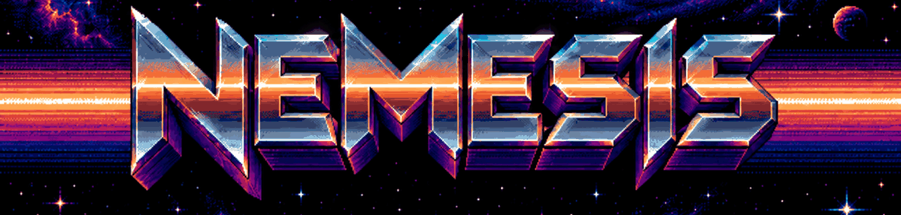
Part one
Getting started
What Nemesis is
Nemesis is free firmware for the Randomwaves Drumboy Pro groovebox. It replaces the software inside the box and turns it into a synthesizer, a sampler and a sequencer that work together.
A groovebox is a drum machine and a synthesizer in one box, built to make loops. You build a short loop, called a pattern. You change it while it plays. Then you line patterns up into a song. You don't need a computer for any of this, and the music keeps playing while you edit patterns and sounds.
Firmware is the program that runs inside a device. The Drumboy Pro loads new firmware from its SD card, so installing Nemesis needs only a card reader. You can go back to the original firmware at any time, and Installing, page shows how.
Nemesis is an independent project, not made by Randomwaves. It is free, and this manual describes Beta 2, a test version.
You can try it before you install anything. The website has Online Nemesis, which runs the firmware's own code in a browser, and a tutorial of 16 lessons. See The web tools, page .
What is in the box
| What | How many | In a few words |
|---|---|---|
| Parts | 7 | The instruments, named A to G. Each one is a synth or a sampler. |
| Lanes | 10 | The tracks that play the rhythm. All ten are on one screen. |
| Steps | up to 32 | Each lane has its own length, inside a pattern as long as its longest lane. |
| Patterns | 16 | A pattern is all ten lanes with their steps. |
| Songs | 8 | A song is a list of up to 64 rows, each a pattern and how often it repeats. |
| Presets | 200 | Ready-made synth sounds in 11 types. Three are built in and 197 are files on the card. |
| Wavetables | 200 numbered banks | Sets of richer wave shapes, read from the card. The install package holds the ones the presets use. |
| Samples | up to 3,072 | Sounds recorded in files. Your card already holds a library, and 12 are built in. |
| Slices | up to 32 a sample | Nemesis cuts a loop at its hits on the device, with no computer. |
| Effects | 5 | Delay, reverb and chorus shared by the parts, a compressor on the master, and an amp simulator on each part. |
| Project slots | 30 | Thirty places on the card, plus three factory projects in the firmware. |
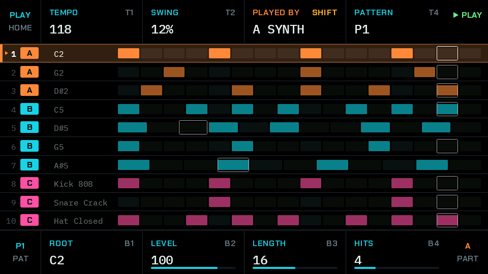
Nearly every picture in this manual is like this one. It came from the firmware's own drawing code, nothing retouched.
All ten lanes are in front of you while the music plays. Each row is a lane and each block is a step that plays.
The eight boxes, four on top and four below, belong to the eight knobs. Each box says what its knob does right now.
Read this first
Nemesis is free software, given as it is, with no warranty of any kind. You use it at your own risk. Keep a copy of your SD card: a power cut during a save, or a failing card, can lose data, and installing other firmware on your device is your own choice. The makers accept no liability for lost data or for damage to cards or devices.
If you do not accept this, do not install Nemesis.
What beta means
This is Beta 2, an early test version. It works on the devices it has been tried on, but expect bugs, and things may change in the next version.
The voice, the sequencer, the effects, the seven parts, saving to the card and recording have all run on a real Drumboy Pro. Slices have mostly been tested on a computer so far. The MIDI sockets have carried notes both ways, clock out and the librarian on a real cable. The newest features, such as the tracker, deleting a project and exporting a song, have had the least time on real hardware.
Saving to the card was built with care, and The card, page explains how. A save is meant either to finish or to leave the version before it in place. That is what the design aims at. It is not a promise. Power cuts have only been tried in simulation, never on a real card, and a card can simply fail. So keep a copy of your card on a computer, and make a fresh copy now and then.
The preset librarian on the website has read a Drumboy over a real MIDI cable, but sending and deleting presets have not yet been proven. The web tools, page says what you can use today.
Installing
You need about 10 minutes, a computer with Windows or macOS, and a way to put the card in it.
What you need
- A Drumboy Pro and its SD card. Your card already holds the samples. Nemesis uses them where they are, and the package does not change them.
- A computer with Windows or macOS, and a way to put the card in it.
- The Nemesis zip file from the Install page of the website.
It must be formatted FAT32, so 32 GB or smaller is simplest, and it must hold a copy of everything on your Drumboy's own card. Cards bigger than 32 GB usually come as exFAT, which the Drumboy cannot read.
What is in the package
| File | What it is |
|---|---|
Drumboy_Pro_Fw_Nemesis_...bin | The firmware. The end of its name is the version. |
CATHODE | A folder with the presets and wavetables. CATHODE is the engine's name. |
INSTALL.txt | These steps, as text. |
LICENSES.txt | The disclaimer and the licences. |
Installing on Windows
- Switch the Drumboy off and take out the card. Put the card in your computer. If Windows offers to scan, fix or format the card, say no.
- Make a backup. Open the card in File Explorer, select everything, and copy it to a new folder on your computer. Do not skip this.
- Right-click the Nemesis zip file and choose Extract All. Work from the extracted folder, not from inside the zip.
- Copy the .bin file and the CATHODE folder to the top level of the card, next to the Sample and System folders. Do not put them inside another folder.
- If Windows says files already exist, this is not a first install: see Updating below.
- In File Explorer, right-click the card and choose Eject. Wait until it says it is safe, then take the card out.
Installing on macOS
- Switch the Drumboy off and take out the card. Put the card in your Mac. If macOS offers to repair or initialize the card, say no.
- Make a backup. Open the card in Finder, select everything, and copy it to a new folder on your Mac. Do not skip this.
- Double-click the Nemesis zip file to unpack it.
- Copy the .bin file and the CATHODE folder to the top level of the card, next to the Sample and System folders. Do not put them inside another folder.
- If Finder says CATHODE already exists, press Stop. This is not a first install: see Updating below. Choosing Replace would delete your saved projects.
- In Finder, click the eject button next to the card. Wait until the card disappears from the sidebar, then take it out.
macOS leaves small hidden files on the card, with names starting with ._. They are harmless, and the Drumboy ignores them.
Finishing the install, on both
- Put the card in the Drumboy and switch it on.
- Wait about 20 seconds. The Drumboy's own installer runs first: a green box says UPDATING FIRMWARE, with V1.01 under it (the file's own number, not the Nemesis version), and then FIRMWARE UPDATED. Do not switch off during this step.
- The Nemesis picture appears, and then the sequencer screen.
- The installer empties System/Firmware and moves the .bin file into it, so it only installs once. That deletes the original firmware file from the card, which is one more reason to keep your backup.
The first save
Starting up does not write to the card, with one exception: if a power cut stopped a preset being replaced, the next start finishes that first. The first time you save after switching on, Nemesis reads through the whole card to check that it is safe to write to. That takes some seconds, and longer on a full card. The sound keeps playing.
If a save says the card has a problem, Nemesis has found damage and will not write to the card. It still plays. Put the card in a computer and run a disk check (Windows: right-click the card, Properties, Tools, Check. macOS: Disk Utility, First Aid). Nemesis never repairs a card itself.
Updating to a new version
Copy only the new .bin file to the top level of the card, then eject and switch on as above. Your projects and presets stay as they are.
To get new presets or wavetables as well, copy the files inside the package's CATHODE/PRESETS and CATHODE/WT into the same folders on the card. Copy the files, not the CATHODE folder itself.
Going back to the original firmware
Your original firmware file is in your backup, in its System/Firmware folder, with a name like Drumboy_Pro_Fw_01_02.bin. Copy it to the top level of the card, eject, and switch on. If you have no backup, get it from Randomwaves.
Your projects made with Nemesis stay in the CATHODE folder but the original firmware will not read them. Your samples are not touched.
If the install goes wrong
- Nothing changes when you switch on: check that the .bin file is at the top level of the card, and that its name still starts with Drumboy_Pro_Fw and ends with .bin. Windows can hide the .bin ending, so do not rename the file.
- No presets or wavetables: check that CATHODE is at the top level, with PRESETS and WT inside it.
- The card is not read at all: check it is FAT32, using your computer's disk properties or Disk Utility.
- Anything else: put your backup back on the card and go back to the original firmware, as above.
A tour of the panel
Everything is in front of you: 8 knobs, a screen, and three groups of keys. Learn the groups and the rest follows.
| Printed | Keys | What it does |
|---|---|---|
| □ ▷ ○ | STOP PLAY REC | Stop, play, and the large ring opens the recording screen. |
| ● + ○ | ●ADD +UP ○CLEAR | A new rhythm or song row, one lane or row up, and clear. With SHIFT, the small ring is undo. |
| ◁ ‖‖ ▷ | ◁LEFT ‖‖OK ▷RIGHT | Move, and the three bars are OK: load, confirm or switch a step. |
| C − P | CCOPY −DOWN PPASTE | Copy, one lane or row down, and paste. |
| M F S | MMUTE FFILL SSTEP | Silence a lane, play a fill while held, and open the step editor. |
| F D R | FFILE DPART RMIXER | Sounds and samples, the next part, and the mixer. |
| Curves and rings | OSC 1 OSC 2 SUB FILTER 1 FILTER 2 GRIT AMP MOD GLOBAL | The nine sound pages. |
| L I S | LBACK IPROJECT SSONG | Back one level (held: home), the project screen, and the song screen. |
| Nine dots | SHIFT | Held: the second job of a key, and big steps on a knob. |
| Ring and line | FX | The effects, at the bottom left. |
| 1 to 10 | key 1 to key 10 | Pick a lane on the home screen. In the step editor keys 1 to 8 are steps. |
The knobs
The four knobs above the screen are T1 to T4, and the four below are B1 to B4. They turn without end, and the screen shows the value. Each knob's job changes with the screen, and the box beside it always says what that job is.
On a knob with a wide range, hold SHIFT while you turn for bigger steps: six at a time.
The screen
A box that shows a setting has a coloured label. A box marked INFO only tells you something, and turning its knob says so. A box that does nothing is empty and dark.
The top left corner says which screen you are on, and L BACK. The top right shows play or stop, and the tempo on screens that have no tempo knob. The bottom left shows the pattern, and the bottom right the part.
Getting back
LBACK goes back one level. Hold it for a moment and it goes home from anywhere. SHIFT with LBACK goes home at once. So you can't get lost.
Pressing the key of the page you are on also goes back. On the SLICE page the first press opens SLICE EDIT.
Top of the panel
LINE is the audio input and output, HP the headphones, and MIDI and SYNC are small sockets for in and out. Nemesis uses the line input for recording, the MIDI sockets for notes and clock, and the SYNC sockets for clock. The USB-C socket is for power: Nemesis has no USB MIDI.
First sound
A Drumboy starts with an empty project, so there is nothing to hear yet. Three factory projects are built into the firmware, and the first one is ready to play.
A project holds everything: patterns, songs, sounds and effects. Here you load one and bend a sound while it plays.
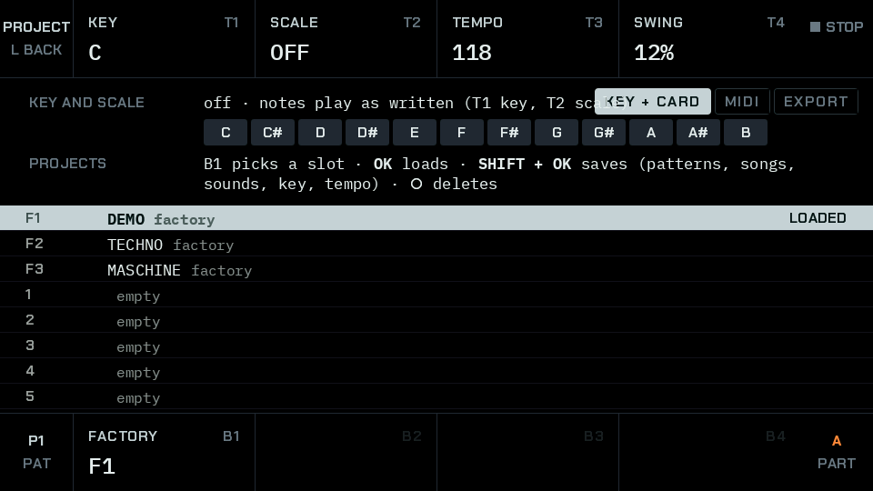
- Press IPROJECT. The screen shows a list of projects.
- Press +UP until F1 DEMO is marked.
- Press ‖‖OK. The project loads.
- Press LBACK to go to the home screen.
- Press PLAY. Everything Nemesis plays is a pattern: a short loop that repeats.
- Press key 8 on the row of ten keys. These keys are the lanes, and a lane is one instrument's track. Lane 8 is the kick drum, and its light flashes every time it plays.
- Press key 1. Lane 1 is the bass line, played by a synthesizer. Choosing a lane doesn't change the music. It only chooses what the knobs and keys work on.
- Press FILTER 1. The filter decides how bright or dark a sound is, and the screen draws its curve.
- Turn T2 down and listen to the bass. This knob is CUTOFF, and turning it down makes the sound darker.
- Press STOP. Your change stays until you change it again.
You started a pattern, picked out two of its instruments and reshaped a sound while it played. That is most of what using Nemesis feels like.
Hold LBACK for a moment. It takes you home from any screen.
A first beat
The step sequencer divides a bar, one measure of music, into 16 steps. You switch each step on or off.
Start with an empty pattern. Hold ○CLEAR for a second on the home screen. Every lane in the pattern is emptied, and the lanes keep their sounds. SHIFT with ○CLEAR brings it all back.
- Press key 8 to pick the kick drum's lane.
- Press SSTEP. This opens the step editor. Keys 1 to 8 on the row become steps instead of lanes, and a light shows each step that plays.
- Press key 1. Step 1 is the start of the bar, and most beats have a kick here.
- Press key 5. Each group of four steps is one beat, so step 5 is the second beat.
- Press key 10. Only eight steps fit on the keys at a time. Keys 9 and 10 move back and forward between pages, so this shows steps 9 to 16.
- Press key 1, then key 5. On this page they are steps 9 and 13, so now there is a kick on every beat.
- Press PLAY. Keep it playing: you can edit while it runs.
- Press −DOWN. +UP and −DOWN move to another lane without leaving the editor. Lane 9 is the snare.
- Press key 5. The editor stays on steps 9 to 16, so this is step 13: a snare on the fourth beat.
- Press key 9 to go back a page, then key 5. That is a snare on the second beat too. A kick on every beat with a snare on two and four is the backbone of a huge amount of music.
- Press −DOWN. Lane 10 is the hi-hat.
- Press ●ADD. This one writes a rhythm for you: it spreads a random number of hits evenly across the lane. Press it again for a different one.
- Press STOP. Your beat stays in the pattern.
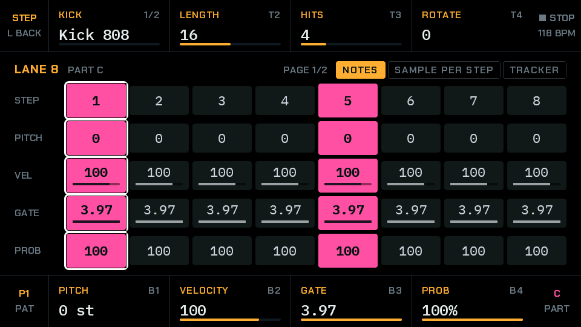
You wrote a beat from nothing. Every lane works this way, and a lane can be up to 32 steps long.
If a step plays in the wrong place, press its key again to switch it off.
Choosing sounds
A preset is a ready-made sound for a part. There are 200, sorted by type. Here you load a new bass, undo it, and change a drum sample.
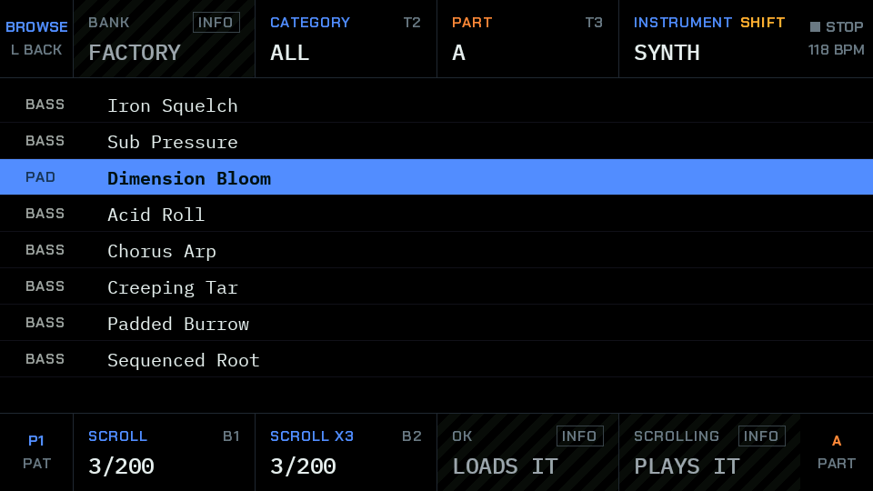
Pause on a preset and it plays. OK loads it.
◁LEFT and ▷RIGHT change the type, and +UP and −DOWN walk the list.
Browsing never changes your sound until you press OK.
- Hold LBACK for a moment to go home. Press PLAY and keep the music running, because then you hear each preset in the pattern. Press key 1: a preset you load changes that lane's part, part A.
- Press FFILE. The sound browser opens.
- Press ▷RIGHT. The next type is BASS.
- Press −DOWN a few times. Each time you pause, Nemesis plays a preview.
- Press ‖‖OK. The preset loads onto the part, and you go back to where you were.
- Hold SHIFT and press ○CLEAR. That is undo, so the old sound comes back. You can try presets with no risk.
- Press key 8, then FFILE. Drum lanes are different: each one picks its own sample, so the browser now lists samples.
- Press −DOWN, then ‖‖OK. Lane 8 plays the new sample. This one change touches only this lane.
- Press STOP.
Samples are sorted into folders, and ◁LEFT and ▷RIGHT change the folder in the browser too. On a drum lane OSC 1 opens the SAMPLE page, where you don't need the list: T1 picks the sample, and with SHIFT held it picks the folder.
A melody
Drums only need on and off, but a melody needs notes. In the step editor every step has its own pitch, loudness and length.
- Press key 1 on the home screen, then SSTEP. You are on lane 1, the bass line.
- Press ○CLEAR twice, quickly. The first press removes your edits and the second empties the lane.
- Press key 1. A note on step 1. It plays the lane's ROOT, its home note.
- Press key 3. A second note.
- Turn B1 up a little. This is NOTE. It changes the pitch of the step you just pressed, and each click is one key on a piano.
- Press key 6, and turn B1 down a little. A third note, below the root.
- Press PLAY. That's your bass line. You can press steps and turn NOTE as much as you like while it plays.
- Turn B3 up. This is GATE: how long the selected step's note is held. Short notes bounce and long ones flow together.
- Turn T2 down to 8. This is LENGTH, the number of steps before this lane loops. The other lanes keep their own lengths.
- Press STOP.
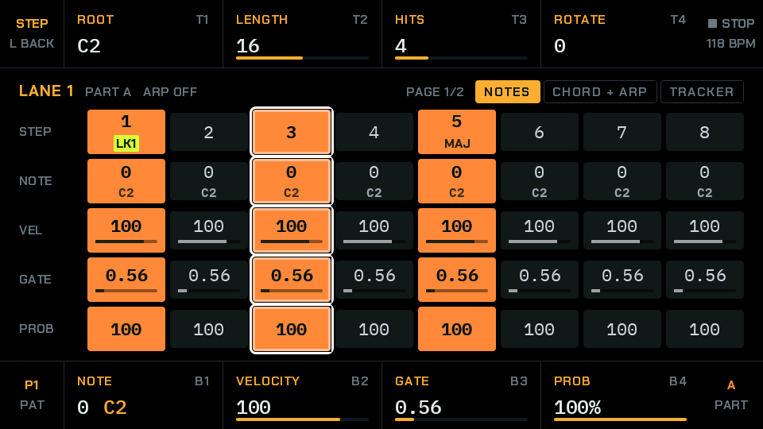
Each step has its own NOTE, VELOCITY (how hard it's played), GATE and PROB, the chance it plays at all.
Try a LENGTH of 7 or 5 some time: the lane falls across the others until the longest lane ends, and then they all start again.
A first p-lock
A p-lock, short for parameter lock, changes a setting for one single step. It's what makes a sequence sound played rather than repeated.
The filter can open on the third note only, for example, and close again straight after.
- Press PLAY. You are still in the step editor on the lane from the last chapter, and step 3 has a note. (Coming from home, press SSTEP first.)
- Hold key 3 for a moment, then let go. Holding a step opens its lock, and the screen says you are locking step 3.
- Press FILTER 1. With a lock open, you choose a page as usual.
- Turn T2 up, well past where it was. That's CUTOFF again, but only for step 3. One note in the bar becomes brighter than the others.
- Press key 3. Tapping the same step closes the lock. The change stays on the step, and your knob moves go back to changing the whole sound.
- Press STOP.
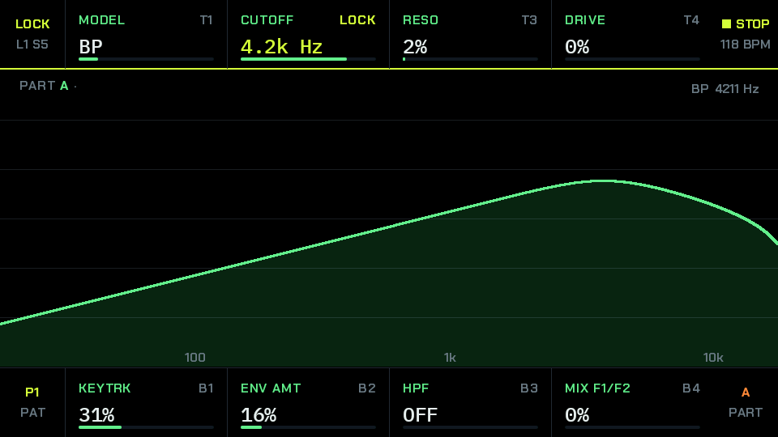
The box that reads LOCK belongs to one step. The rest of the pattern keeps its own value.
To remove a step's locks, open its lock and press ○CLEAR.
A step holds up to eight locks. P-locks in full, page has the whole story.
Saving, loading and deleting
A project lives in memory until you save it to the card. When the power goes, what you have not saved is gone.
Saving
- Press IPROJECT. The list starts with F1, F2 and F3, and then come 30 slots on the card. +UP, −DOWN and B1 walk the list.
- Move to a slot. A factory project can't be saved over, so your work goes in a slot.
- Hold SHIFT and press ‖‖OK. The whole project is saved there: patterns, songs, sounds, key and tempo.
The first save after switching on takes some seconds, because Nemesis first reads through the whole card to check that it is safe to write to. The sound keeps playing.
Saving over a slot that already holds a project can be taken back: SHIFT with ○CLEAR goes back to the save before it, as long as you have not done another undoable action since and the power has stayed on. If the older copy on the card has gone bad, the undo refuses and says NOT UNDONE.
Loading
Move to a project and press ‖‖OK. If you load one by mistake, SHIFT with ○CLEAR brings back what you had.
Deleting
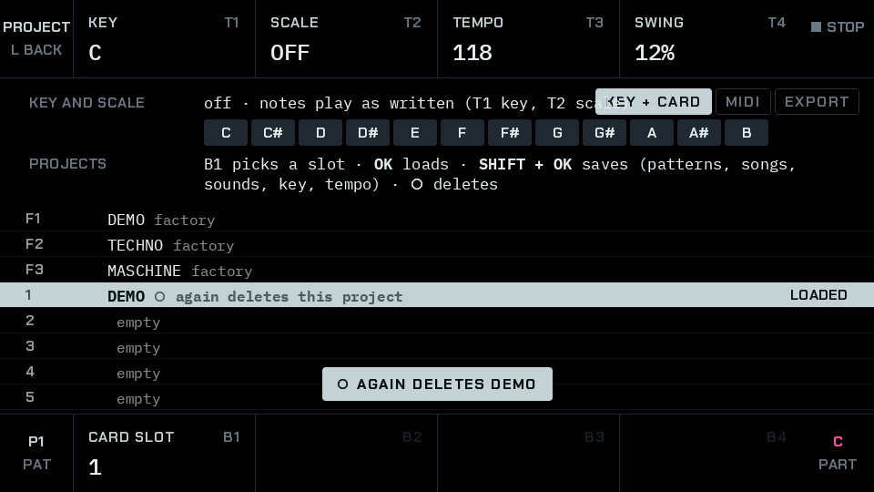
Move to the slot and press ○CLEAR. It asks for four seconds, and any other key or knob takes the question back.
Press ○CLEAR again to delete it from the card.
SHIFT with ○CLEAR puts it back. That undo lasts until your next undoable action, or until the power goes.
A project on the card is a file, and files can be lost. Copy the card to a computer now and then. The card, page explains what is where.
Where to go next
You have seen the main ideas: lanes play the rhythm, parts make the sound, steps carry notes and locks, and projects keep it all.
The 16 tutorial lessons
The website's Tutorial teaches all of this beside a working panel. The control to use always flashes, and each step waits until you have done it.
- First sound
- Lanes and parts
- Your first beat
- Choosing sounds
- Shaping a sound
- Melody
- P-locks
- Tracker
- Slices
- Sample loops
- Recording
- Effects
- Mixing and CPU
- Patterns and songs
- Projects
- Exporting
Things to try
- Load F2 TECHNO and F3 MASCHINE from PROJECT. Both use only the built-in samples, and nearly all their movement comes from p-locks.
- Press FFILE on a synth lane and walk through the types.
- Turn HITS and LENGTH on the home screen, B4 and B3, and hear rhythms appear (Euclid rhythms and tapped steps, page ).
- Press SSTEP twice more to reach the tracker (The tracker, page ).
- Bring a loop from the card and cut it (Slices, page ).
The rest of this manual is a reference. Read what you need, in any order.
Part two
Deep dive
Lanes and parts
Lanes are the tracks that play the rhythm. Parts are the instruments that make the sound. Keep those two words apart and the rest of Nemesis is simple.
Lanes
There are ten lanes in every pattern. A lane holds up to 32 steps, a rhythm, a root note, a level, a mute, and an arpeggio. On a sampler part it also holds its own sample and sound pages.
Select a lane with key 1 to key 10 on the home screen. +UP, −DOWN, ◁LEFT and ▷RIGHT step through them too. Selecting changes nothing you can hear. It says what the knobs and keys work on.
Lanes in a pattern keep their own settings, so a lane's rhythm in P2 has nothing to do with the same lane in P1.
Parts
There are seven parts, A to G. A part is one instrument, and each is either a synth or a sampler.
A synth part has one sound, on nine pages, shared by all its lanes. Three lanes on one synth part are three rhythms on one instrument. Parts belong to the project, so a synth's sound is the same in every pattern.
A sampler part is different: each of its lanes has its own sample and its own sound pages, so one sampler part can be a whole drum kit. A drum lane's sample belongs to the pattern.
A synth part has 1 to 5 voices and a sampler part 1 to 8. A voice is one note sounding. Parts each have a colour, and it is the same on every screen.
Moving a lane to another part
On the home screen T3 says PLAYED BY. It is a setup move, so a stray turn does nothing but tell you how: hold SHIFT and turn T3. Parts D to G are spare synths, ready for when you give one a lane. A lane on a synth part plays notes. On a sampler part it plays its own sample, and notes become pitch.
Making a part a sampler or a synth
Press FFILE and find the INSTRUMENT box on T4. Hold SHIFT and turn it. T3 picks the part first. This changes only the part's type, and SHIFT with ○CLEAR undoes it.
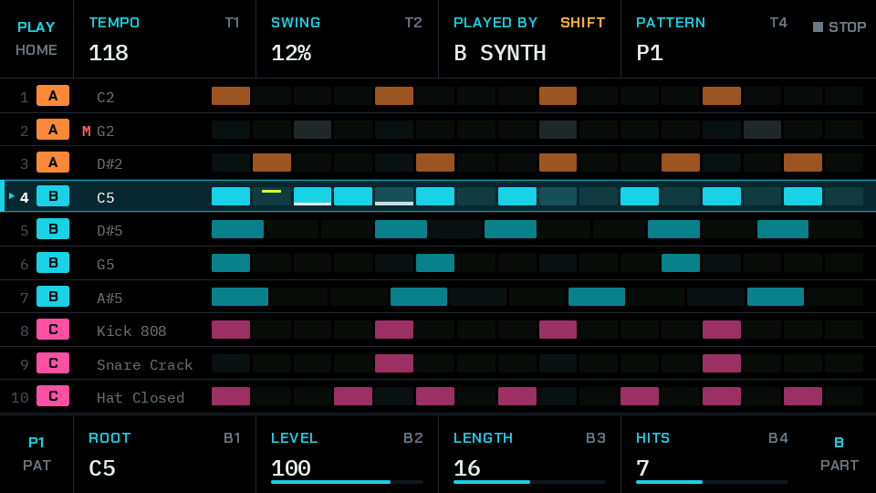
Each row is a lane, and the name beside it is its root note or sample. A muted lane is dim. Small marks on a step show that it has locks or a chord.
The ten keys' lights follow the screen: the selected lane is lit, and a lane's light flashes when it plays.
| Knob | Name | Range | What it does |
|---|---|---|---|
| T1 | TEMPO | 40 to 240 | Beats per minute, for the whole project. |
| T2 | SWING | 0 to 50% | Every second step comes late by this share of a step. |
| T3 | PLAYED BY | A to G | Hold SHIFT: the lane's part. |
| T4 | PATTERN | P1 to P16 | The pattern. While playing, the next one. |
| B1 | ROOT or sample | C0 to C8 | A synth lane's home note, or a sampler lane's sample. |
| B2 | LEVEL | 0 to 127 | The lane's level. |
| B3 | LENGTH | 1 to 32 | Steps before the lane starts again. |
| B4 | HITS | 0 to LENGTH | Hits of the Euclid rhythm. |
Euclid rhythms and tapped steps
You could switch on every step by hand. But many of the world's rhythms come from one simple idea: spread a number of hits as evenly as the steps allow. That is a Euclid rhythm.
LENGTH, HITS and ROTATE
Every lane has three numbers. LENGTH is how many steps it has. HITS is how many of them play. ROTATE slides the rhythm along the lane. Turn any of them and the lane changes at once: LENGTH and HITS on the home screen or in the step editor, ROTATE in the step editor. Three hits in eight steps give x..x..x.
ADD rolls the dice
●ADD gives the selected lane a new Euclid rhythm: a random number of hits and a random rotation. Press it until you like what you hear. SHIFT and ○CLEAR do not take this back, so note it down if you like the one before.
Lengths that differ
Lanes keep their own lengths against a shared clock, inside the pattern. A lane of 12 under a lane of 16 starts again after 12 steps, so its first four steps fall against the end of the other lane. When the longest lane ends, every lane starts again from step 1, so the pattern repeats exactly. A pattern lasts as long as its longest lane.
Tapped steps
A tap on a step flips it: a silent step plays, and a hit goes silent. Tapped steps are kept apart from the rhythm, on top of it. So you can change HITS later and keep your hand-made changes.
Clearing
- ○CLEAR once removes your taps and leaves the rhythm.
- ○CLEAR again, quickly, turns the rhythm off too, so the lane is empty. Turning HITS brings the rhythm back.
- ○CLEAR held for a second, on the home screen or in the step editor, empties every lane in the pattern: rhythm, taps, locks and slice SYNC. The lanes keep their sounds, levels and mutes.
- SHIFT with ○CLEAR brings back whichever of these you did last.
A step's locks stay with the step, not with the rhythm. If you move the hits, a lock may land on a silent step. It is kept, and used again when the step plays.
The step editor
SSTEP opens the step editor for the selected lane. It has three views, and pressing SSTEP again moves to the next: notes, then chords and arpeggios, then the tracker.
Eight steps show at a time, because 16 and 32 steps then fall into bars of 2 and 4 pages.
- key 1 to key 8: the steps on this page.
- key 9, key 10: page back and forward.
- ◁LEFT, ▷RIGHT: move the cursor.
- ‖‖OK: switch the step under the cursor.
- +UP, −DOWN: another lane.
A press, a tap and a hold
Pressing a step key selects it at once. What happens next depends on you:
- Tap it and let go: the step switches on or off.
- Hold it and turn a knob: that knob edits that step, and the step stays as it was.
- Hold it for about a third of a second and let go without turning: its lock opens (P-locks in full, page ).
What a step holds
A step's NOTE is an offset from the lane's ROOT, up to two octaves either way. With a project scale set, the box beside it shows the note that really sounds. VELOCITY is how hard it plays. GATE is how long it is held, counted in steps, so 1.00 is one step long. PROB is the chance that it plays at all, thrown again each time it comes round.
| Knob | Name | Range | Default | What it does |
|---|---|---|---|---|
| T1 | ROOT | C0 to C8 | by lane | The lane's home note. On a sampler lane this knob is the lane's sample. |
| T2 | LENGTH | 1 to 32 | by lane | Steps before the lane starts again. |
| T3 | HITS | 0 to LENGTH | by lane | Hits of the Euclid rhythm. |
| T4 | ROTATE | 0 to LENGTH − 1 | 0 | Slides the rhythm along the lane. |
| B1 | NOTE or PITCH | −24 to +24 | 0 | Semitones from the root, or on a sampler lane from the sample's own pitch. |
| B2 | VELOCITY | 1 to 127 | 100 | How hard the step plays. |
| B3 | GATE | 0.03 to 3.97 steps | by lane | How long the note is held. |
| B4 | PROB | 0 to 100% | 100% | The chance the step plays. |
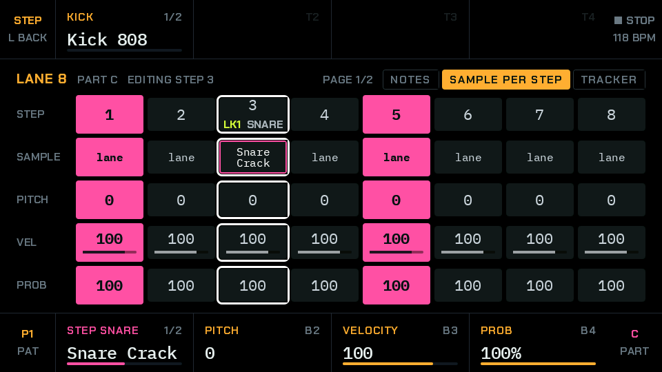
One drum lane can carry several sounds, such as a kick, a rim and a clap, which frees lanes for other parts.
- T1: the lane's own sample. Its box shows the folder.
- B1 STEP SAMPLE: this step's sample. Fully left is LANE.
- T2 STEP SLICE, on a sliced lane.
- B2 PITCH, B3 VELOCITY, B4 PROB.
Pick the step with ◁LEFT, ▷RIGHT or by holding its key. A sample on a step is a lock, so it counts as one of the eight.
Chords and arpeggios
On a synth lane the step editor's second view adds chords to steps and an arpeggio to the lane.
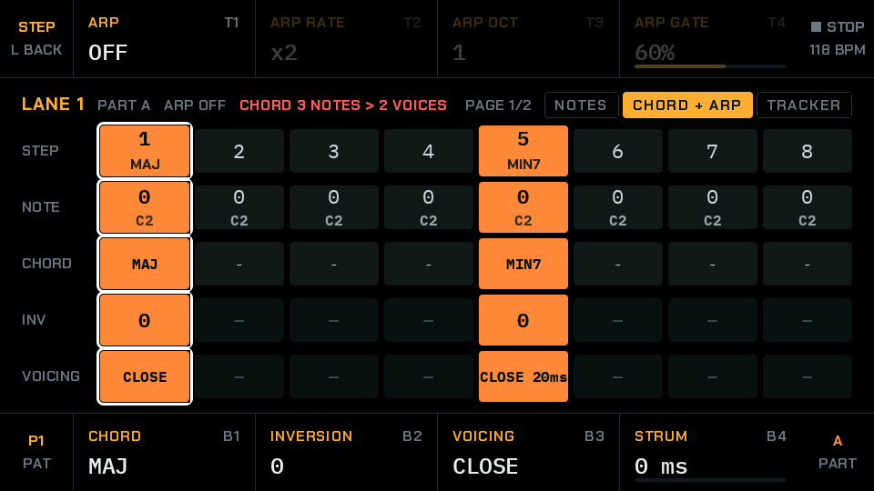
A chord is several notes at once. An arpeggio plays notes one after another. A chord needs a voice for each note, and the header warns you when it needs more than the part has: CHORD 3 NOTES > 2 VOICES. The oldest voice is then stolen.
With an arpeggio on, the notes come in turn and one voice is enough.
| Knob | Name | Range | Default | What it does |
|---|---|---|---|---|
| T1 | ARP | OFF, UP, DOWN, UP/DN, RAND | OFF | The order of the lane's arpeggio. |
| T2 | ARP RATE | x1, x2, x3, x4, x6, x8 | x2 | Notes per step. |
| T3 | ARP OCT | 1 to 4 | 1 | Octaves it covers. |
| T4 | ARP GATE | 5 to 100% | 60% | How long each arpeggio note is held, as a share of its time. |
| B1 | CHORD | 13 choices, below | OFF | The step's chord. The step's note is its root. |
| B2 | INVERSION | 0 to 3 | 0 | Each one lifts the lowest note an octave. |
| B3 | VOICING | CLOSE, OPEN | CLOSE | OPEN lifts every other note an octave. |
| B4 | STRUM | 0 to 120 ms | 0 ms | Plays the notes one after another, like a strummed guitar. Not with an arpeggio. |
| Name | Notes above the root (semitones) | Sounds like |
|---|---|---|
| MAJ | 0 4 7 | Bright, settled |
| MIN | 0 3 7 | Dark, settled |
| SUS2 | 0 2 7 | Open |
| SUS4 | 0 5 7 | Open, waiting to resolve |
| DIM | 0 3 6 | Tense |
| AUG | 0 4 8 | Unsettled |
| MAJ7 | 0 4 7 11 | Soft and bright |
| MIN7 | 0 3 7 10 | Soft and dark |
| DOM7 | 0 4 7 10 | Bluesy, leaning forward |
| MIN9 | 0 3 7 10 14 | Wide and dark. Five notes |
| 5TH | 0 7 | Neither major nor minor |
| OCT | 0 12 | The note and its octave |
How the arpeggio plays
On a step with a chord, the arpeggio walks the chord's notes across the octaves you set. On a single note it repeats that note, which makes a ratchet, a fast repeated hit. UP/DN goes up and comes back, and RAND picks any note of the set.
ARP RATE, ARP OCT and ARP GATE are dark while ARP is OFF. INVERSION, VOICING and STRUM are dark on a step with no chord, and STRUM is dark with an arpeggio on.
Chords on a sampler lane
A chord on a sampler lane plays pitched hits of the lane's sample. The sampler's second view has no chord knob, so a step keeps a chord it had before, and the tracker's popover says so.
With a project scale
With a scale set on PROJECT, each note of a chord is moved into the scale one by one, so chords become diatonic: they use only notes of the key. See Key and scale, page .
The tracker
A tracker shows steps as text, with a row for each step and a column for each lane. It isn't a second sequencer: it is the same steps as the step editor, so what you write here is there too.
Press SSTEP until the top left corner says TRACKER. All ten lanes are on screen at once, sixteen rows to a page.
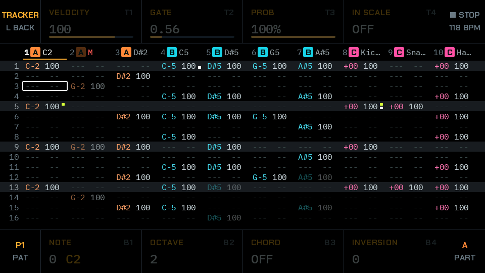
A cell shows the note and how hard it plays: C-4 100. A sharp is C#4, and dashes are an empty step.
On a sampler lane the note is a pitch, like +03.
Two marks stand at the right of a cell: lime on top for locks, and white under it for a chord, or on a sampler lane for a sample or slice of the step's own.
With a project scale set, a cell shows the note after the scale has moved it.
Rows and lanes
Lanes run in step with each other. The longest lane gives the rows, and a shorter one repeats, which is what the sequencer does. A repeat is dim. It is the step itself, so an edit there changes every repeat of it.
Over 16 rows there are two pages, and a strip under the grid shows which page you are on and where the playhead is. The page does not follow the playhead. When the music is on the other page, only a mark in the strip moves.
The keys
| Key | What it does here |
|---|---|
| +UP −DOWN | Move the cursor up and down the rows. It goes round at the ends. |
| ◁LEFT ▷RIGHT | Move the cursor from lane to lane. |
| SHIFT with +UP or −DOWN | The same place on the other page. |
| ‖‖OK, tapped | On an empty step: the lane's last note goes on it. On a step with a note: the popover opens, and that note becomes the last note. Tapped again: the popover closes. |
| ‖‖OK held with ◁LEFT or ▷RIGHT | Move the note a semitone. With the popover, on an empty step too. |
| ‖‖OK held with +UP or −DOWN | Move the note an octave. |
| ○CLEAR | Removes the step, all of it: locks, chord and velocity. With a lock open it clears the locks and leaves the note. Holding it does not empty the pattern here. |
| SHIFT with ○CLEAR | Undo. |
| key 1 to key 10 | Pick a lane, all ten: keys 9 and 10 are not pages here. |
| A key 1 to 10 held, then let go | Open the lock of that lane's step on this row. |
| A key 1 to 10 held, knob turned | Edit that step. |
| The rest | As in the step editor: MMUTE, FFILL, CCOPY, PPASTE, ●ADD and the others work on the selected lane, and LBACK goes back. |
‖‖OK acts when it comes up, because only then is it known to be a tap. In the other two views it switches the step as it goes down.
The last note is kept per lane, as a distance from the lane's root, because lanes have roots of their own. A new lane starts on its root. It lasts until the power goes off, and it is not saved in the project.
The popover
The popover opens by itself when ‖‖OK or a knob touches a step, not when the cursor merely passes. It closes when you move on, change view or leave the screen, and ‖‖OK closes it too.
It shows the step and lane, the note and how far it is from the root, the octave, the chord, the inversion, and the chord's actual notes.
Its last line says what else matters: a chord with more notes than the part has voices, the arpeggio, or that IN SCALE is on.
| Knob | Synth lane | Sampler lane |
|---|---|---|
| T1, T2, T3 | VELOCITY, GATE, PROB | VELOCITY, GATE, PROB |
| T4 | IN SCALE | nothing |
| B1 | NOTE | PITCH |
| B2 | OCTAVE | OCTAVE |
| B3 | CHORD | STEP SAMPLE (with SHIFT: the folder) |
| B4 | INVERSION | STEP SLICE, on a sliced lane |
Any of these on an empty step puts the last note on it first, and undo takes it all back. All the knobs of an empty step are dimmed except IN SCALE. Three put no note on: the folder knob picks nothing, INVERSION has nothing to invert until the step has a chord, and IN SCALE is not about the step.
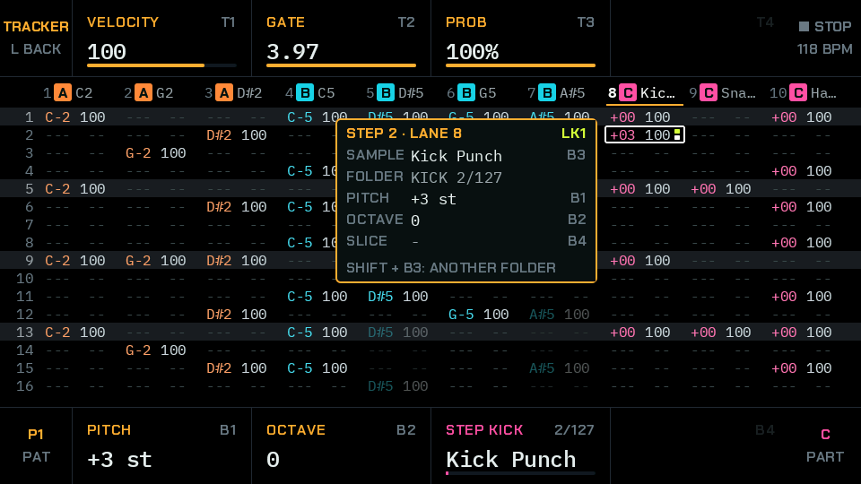
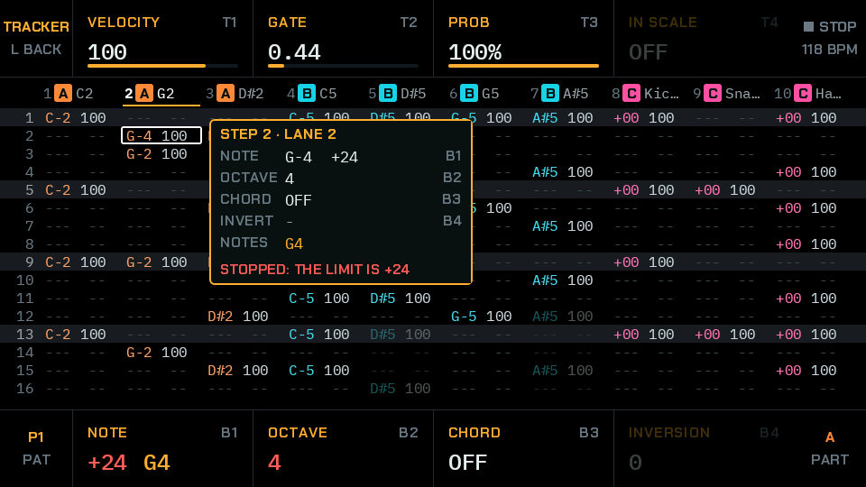
Limits
A step's note stays within two octaves of the lane's root. An octave move that would leave that does not happen at all, because stopping at +24 would change the note. A semitone stops at the limit. Either way the popover says STOPPED in red. Octaves wider than that belong to the lane's ROOT.
IN SCALE
IN SCALE is offered on T4 once PROJECT has a scale, and it is off by default. When it is on, NOTE and ‖‖OK with ◁LEFT or ▷RIGHT walk only the notes of the scale, so every click is a note you can hear change. It is how you are working, not part of the song, so it is not saved. Sampler lanes have none.
Undo and locks
Undo is one level, as elsewhere. Everything done to a step while its popover stays open counts as one undo. A lock works as in the step editor: hold a key 1 to 10, let go, and pick a page. +UP and −DOWN leave it open, and another lane closes it.
What it does not do
Entering a note makes no sound of its own: you hear a note when the pattern plays it. Arrow keys do not repeat when held. ‖‖OK on a filled step does not copy its chord: the last note is a note.
The tracker on a computer
The web version is this same view through the firmware, with a piano on the computer keyboard. In this view only, the letters A to K, with W, E, T, Y and U for the black keys, write a note on the cursor's step and go down a row. Z and X move the piano an octave. Enter is OK, so holding Enter with the arrow keys moves a note. L leaves. A note more than two octaves from the root says so and writes nothing.
P-locks in full
A p-lock stores a value on one step. When that step plays, the value replaces the sound's own for that note only. The next step plays the normal sound again.
Setting one
- Open the step editor or the tracker.
- Hold a step key for about a third of a second and let go. The lock opens, and the corner of the screen turns yellow.
- Open any sound page, or the FX screen's SENDS or AMP SIM views.
- Turn a knob. Its box turns lime and reads LOCK.
- Tap the same step key to close the lock. On a sound page keys 1 to 8 are always the step editor's steps, so a lock opened in the tracker is closed back in the tracker, or by holding LBACK.
Quick moves
While a lock is open, tap another step and the lock moves there, which makes it quick to lock the same knob across several steps. Holding a step and turning a knob on a sound page with a lock open edits that held step's lock. A lock stays open while you move between sound pages.
Seeing them
Steps with locks have a mark on the home grid, a lime mark in the tracker, and LK with a number in the step editor.
Clearing
With a lock open, ○CLEAR removes that step's locks. In the tracker, ○CLEAR with no lock open removes the whole step. A lock that no longer has a hit is kept, and used again when the step plays.
Eight to a step
A step holds up to eight locks. A ninth says A STEP HOLDS 8 LOCKS. A sample on a step and a slice on a step each count as one.
| What | Can it be locked? |
|---|---|
| OSC 1, OSC 2 | Yes, all but WAVE. On a wavetable, POSITION can be locked. |
| SUB, FILTER 1, FILTER 2, GRIT, AMP, MOD | Yes, every knob that is in use. |
| GLOBAL | No. It belongs to the whole part. |
| SAMPLE page | Yes, every knob. Locking SAMPLE plays another sample on that step. |
| Sampler FILTER, AMP, GRIT | Yes. |
| SLICE page | SLICE, RANDOM and RND REV. The rest belong to the lane. |
| LOOP page | XFADE only. |
| FX: SENDS | Yes: DELAY, REVERB and CHORUS, for the part of the lane. |
| FX: AMP SIM | Yes, all but MODEL and CAB, and only if the part's amp is on. |
| FX: DELAY, REVERB, CHORUS, COMP | No. They are shared by all the parts. |
| Project settings: tempo, swing, key, voices | No. |
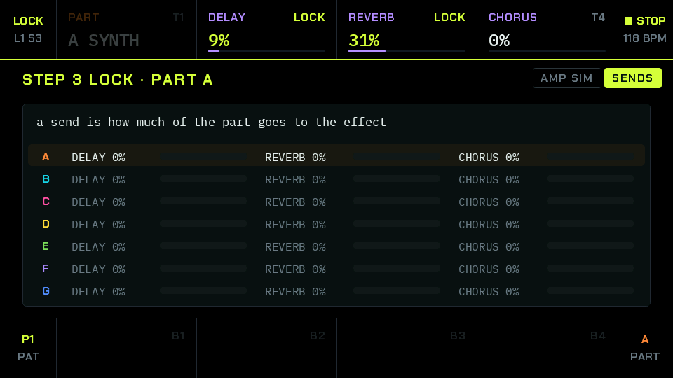
Sample, slice and effect locks
A sample lock plays another sample on a step: use STEP SAMPLE in the second view or the popover, or lock SAMPLE on its page. Turning left past the first sample of a folder takes the lock off.
A slice lock plays a chosen slice: STEP SLICE, or SLICE on the SLICE page.
An effect lock holds for the step's length, not the note's, and then the part's value is back. One note thrown into the delay is the classic use.
F2 TECHNO and F3 MASCHINE are built on locks. Take them apart.
The synth pages
A synth sound moves through stages. Oscillators make the raw tone, a filter shapes it, and an envelope decides how it starts and fades. Each key on the right opens one page for one stage, with eight knobs.
Pages belong to the selected part. A value in a box is always in real units, and a box that has no effect right now is dim: you can still turn it. Press a page's own key to go back, and LBACK returns to where you started however many pages you visited.
Numbers in the Default column are each knob's own default. All seven new parts then take one of three start sounds, which change WAVE on OSC 1, MODEL, CUTOFF, RESO and ENV AMT on FILTER 1, and ATTACK, DECAY, SUSTAIN, RELEASE and VEL SENS on AMP. A preset from the card sets every knob. A built-in preset sets only those same knobs.
Some boxes show a small cost, such as +.58. That is how much of the CPU budget the setting adds to each voice (Mixer, voices and the CPU, page ).
OSC 1
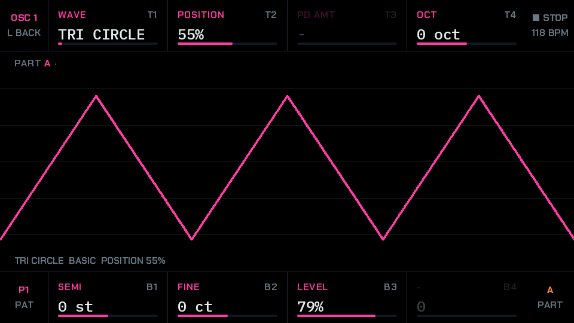
An oscillator makes the raw sound that everything else shapes. There are two, and this is the first.
With WAVE on SIN, PD AMT bends the sine into a richer shape. This is phase distortion. On TRI, SAW and SQR the two PD knobs are dim.
| Knob | Name | Range | Default | What it does |
|---|---|---|---|---|
| T1 | WAVE | SIN, TRI, SAW, SQR, then banks | SIN | The basic shape: sine is pure, triangle soft, saw bright, square hollow. Then come the wavetables on the card. |
| T2 | PD SHAPE | 0 to 100% | 31% | The kind of bend PD AMT gives a sine. On a wavetable this knob is POSITION: where in the table it plays. |
| T3 | PD AMT | 0 to 100% | 0% | How far the sine is bent. |
| T4 | OCT | −2 to +2 oct | 0 | Moves the pitch by whole octaves. |
| B1 | SEMI | −12 to +12 st | 0 | Moves the pitch by piano keys. |
| B2 | FINE | −50 to +50 ct | 0 | Moves the pitch a tiny amount. A small gap between the oscillators sounds thicker. |
| B3 | LEVEL | 0 to 100% | 79% | How loud this oscillator is. |
OSC 2
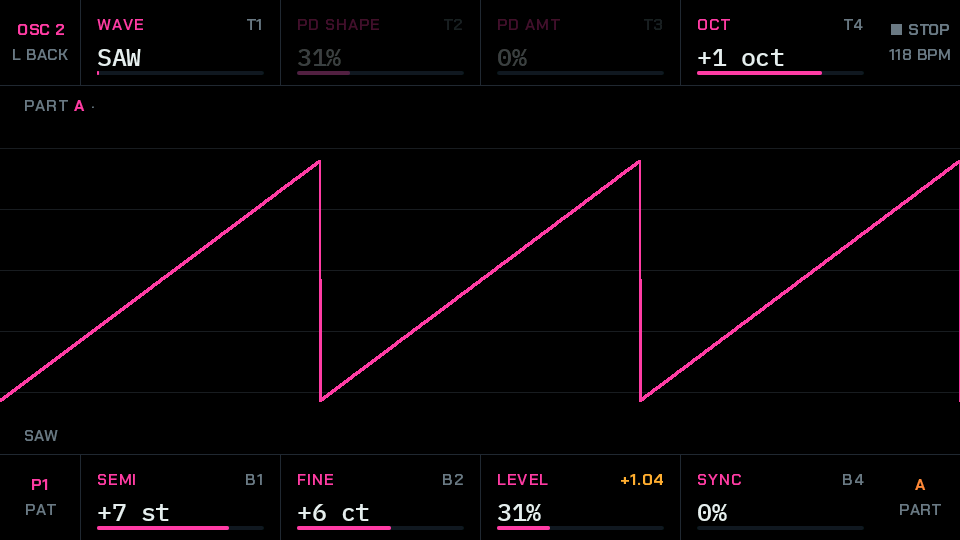
The same knobs as OSC 1, with SYNC in the last box. A sound that does not use it has LEVEL at 0.
A new part keeps OSC 2 at level 0, on a saw, seven semitones up and a little detuned, so turning LEVEL up gives a fifth.
| Knob | Name | Range | Default | What it does |
|---|---|---|---|---|
| T1 | WAVE | as OSC 1 | SAW | The shape of the second oscillator. |
| T2 | PD SHAPE | 0 to 100% | 31% | As OSC 1. On a wavetable, POSITION. |
| T3 | PD AMT | 0 to 100% | 0% | As OSC 1. |
| T4 | OCT | −2 to +2 oct | 0 | Whole octaves. |
| B1 | SEMI | −12 to +12 st | +7 | Piano keys. |
| B2 | FINE | −50 to +50 ct | +6 | A tiny amount. |
| B3 | LEVEL | 0 to 100% | 0% | How loud it is. |
| B4 | SYNC | 0 to 100% | 0% | Makes oscillator 1 restart with this one, for a hard, cutting tone. It turns the UNISON copies off. |
SUB
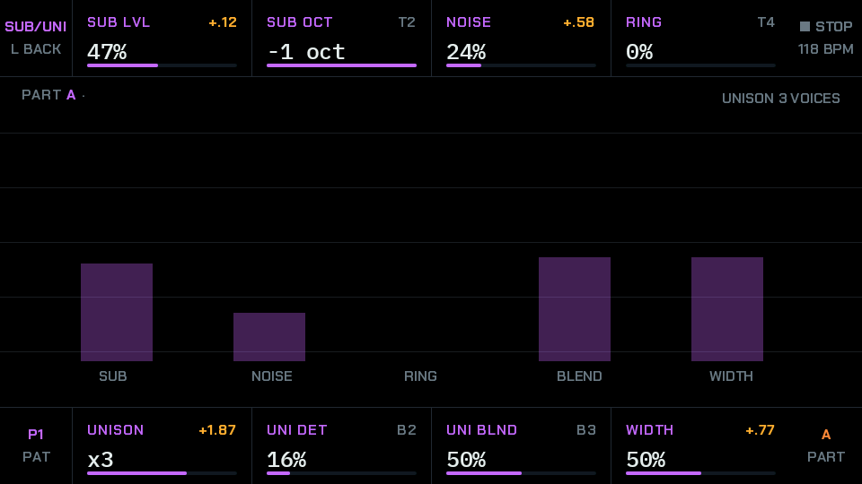
This page adds weight and width: a lower tone, some noise, and stacked copies of oscillator 1.
UNI DET, UNI BLND and WIDTH are dim while UNISON is x1, because one voice has none.
| Knob | Name | Range | Default | What it does |
|---|---|---|---|---|
| T1 | SUB LVL | 0 to 100% | 0% | How loud an extra sine below the note is. |
| T2 | SUB OCT | −2 to −1 oct | −1 | How far below the note that tone sits. |
| T3 | NOISE | 0 to 100% | 0% | Adds hiss, like wind or breath. |
| T4 | RING | 0 to 100% | 0% | Multiplies the two oscillators for a metallic, bell-like tone. Both need some LEVEL, and it turns the UNISON copies off. |
| B1 | UNISON | x1 to x4 | x1 | How many slightly detuned copies play together. |
| B2 | UNI DET | 0 to 100% | 16% | How far apart the copies are tuned. |
| B3 | UNI BLND | 0 to 100% | 50% | How loud the copies are against the main tone. |
| B4 | WIDTH | 0 to 100% | 50% | How far the copies spread left and right. |
FILTER 1
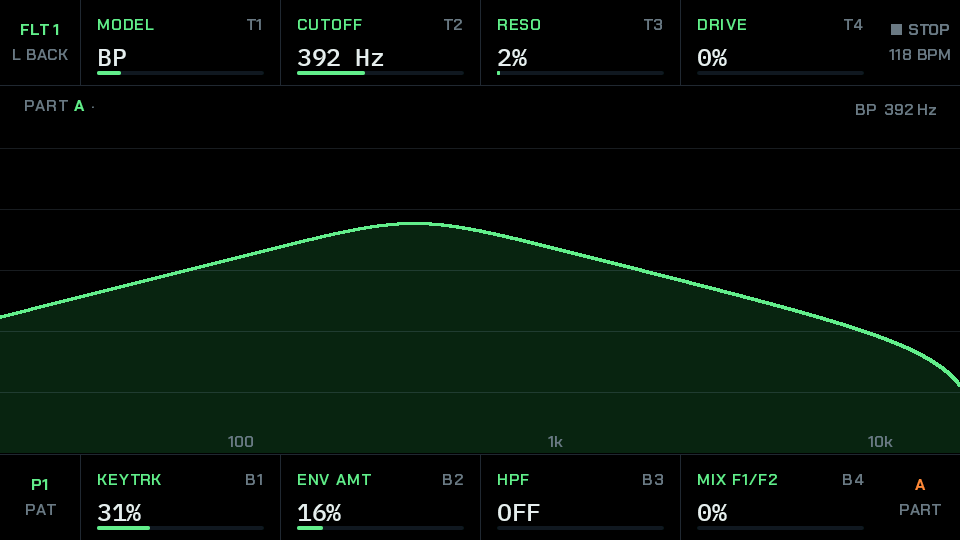
A filter takes part of the sound away, so it decides how bright or dark the sound is.
LP keeps the lows, HP the highs and BP the middle. NOTCH takes out a narrow band.
LADDER, ACID, SOVIET and CLASSIC are low-pass filters with characters of their own.
| Knob | Name | Range | Default | What it does |
|---|---|---|---|---|
| T1 | MODEL | LP, BP, HP, NOTCH, LADDER, ACID, SOVIET, CLASSIC | LP | The kind of filter. |
| T2 | CUTOFF | 30 Hz to 16 kHz | 1.6 kHz | Where the filter starts to cut. Lower is darker. |
| T3 | RESO | 0 to 100% | 24% | Makes the sound ring around the cutoff. |
| T4 | DRIVE | 0 to 100% | 0% | Pushes the filter harder for a rougher sound. |
| B1 | KEYTRK | 0 to 100% | 31% | Makes higher notes brighter. |
| B2 | ENV AMT | 0 to 100% | 31% | How much the filter opens at the start of each note. |
| B3 | HPF | OFF, up to 2 kHz | OFF | A high-pass filter that removes the deep lows under this point. It comes before the filters. |
| B4 | MIX F1/F2 | 0 to 100% | 0% | Moves from both filters to filter 2 alone, with ROUTE on PARALLEL. |
FILTER 2
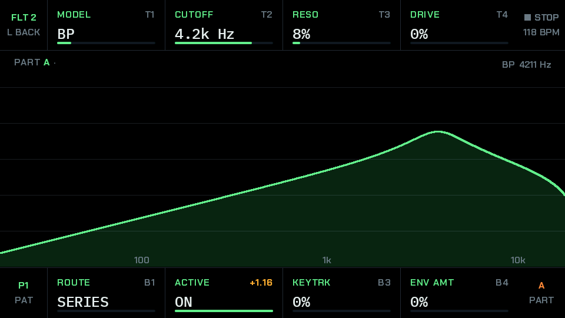
A second filter. It does nothing until ACTIVE is ON, and the other knobs are dim until then.
SERIES puts it after filter 1. PARALLEL runs the two side by side.
Two filters in parallel at fixed places make vowel sounds: two of the presets do just that.
| Knob | Name | Range | Default | What it does |
|---|---|---|---|---|
| T1 | MODEL | as FILTER 1 | BP | The kind of filter. |
| T2 | CUTOFF | 30 Hz to 16 kHz | 4.2 kHz | Where it starts to cut. |
| T3 | RESO | 0 to 100% | 8% | Makes the sound ring around the cutoff. |
| T4 | DRIVE | 0 to 100% | 0% | Pushes the filter harder. |
| B1 | ROUTE | SERIES, PARALLEL | SERIES | After filter 1, or beside it. |
| B2 | ACTIVE | OFF, ON | OFF | Turns filter 2 on or off. |
| B3 | KEYTRK | 0 to 100% | 0% | How far the cutoff follows the note, on top of following FILTER 1. |
| B4 | ENV AMT | 0 to 100% | 0% | How far the filter envelope opens FILTER 2, on top of following FILTER 1. |
GRIT
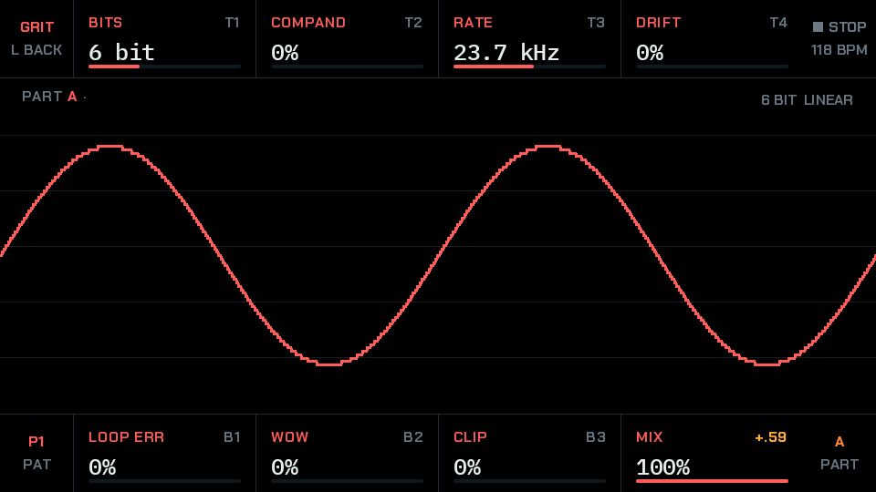
GRIT makes a sound rougher, like an early digital machine. Bits, companding, rate and drift work together, and MIX sets how much you hear.
At 16 bits, a full rate, no companding and no drift, the converter is left out and costs nothing.
| Knob | Name | Range | Default | What it does |
|---|---|---|---|---|
| T1 | BITS | 1 to 16 bit | 16 bit | Fewer bits make the sound coarser. |
| T2 | COMPAND | 0 to 100% | 0% | Adds the squeezed, grainy sound of old digital chips. |
| T3 | RATE | 1.0 to 44.1 kHz | 44.1 kHz | A lower rate adds a harsh, metallic edge. |
| T4 | DRIFT | 0 to 100% | 0% | Lets the sound wander a little, like old electronics. |
| B1 | LOOP ERR | 0 to 100% | 0% | The wave's loop lands a little off, which makes a buzz at the pitch of the note. |
| B2 | WOW | 0 to 100% | 0% | A slow wander in pitch, like a worn tape, up to most of a semitone. |
| B3 | CLIP | 0 to 100% | 0% | Flattens the loudest peaks for a harder edge. It comes last, after the envelope. |
| B4 | MIX | 0 to 100% | 100% | How much of BITS, COMPAND, RATE and DRIFT you hear. 0% leaves them out. |
AMP
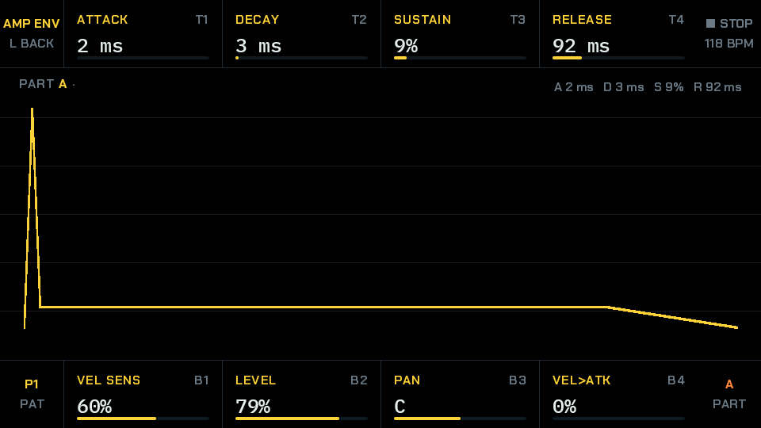
The amp envelope sets the volume over time, from the first moment of a note to the last.
The filter's movement follows DECAY and RELEASE too.
| Knob | Name | Range | Default | What it does |
|---|---|---|---|---|
| T1 | ATTACK | 2 ms to 2.5 s | 3 ms | How long the sound takes to rise. |
| T2 | DECAY | 2 ms to 2.5 s | 324 ms | How long it takes to fall to SUSTAIN. |
| T3 | SUSTAIN | 0 to 100% | 55% | How loud it stays while the note is held. |
| T4 | RELEASE | 2 ms to 2.5 s | 199 ms | How long it takes to fade after the note ends. |
| B1 | VEL SENS | 0 to 100% | 63% | How much louder a harder hit plays. |
| B2 | LEVEL | 0 to 100% | 79% | How loud the sound is. |
| B3 | PAN | L100 to R100 | C | Where it sits between left and right. |
| B4 | VEL>ATK | 0 to 100% | 0% | Makes harder hits start faster. |
MOD
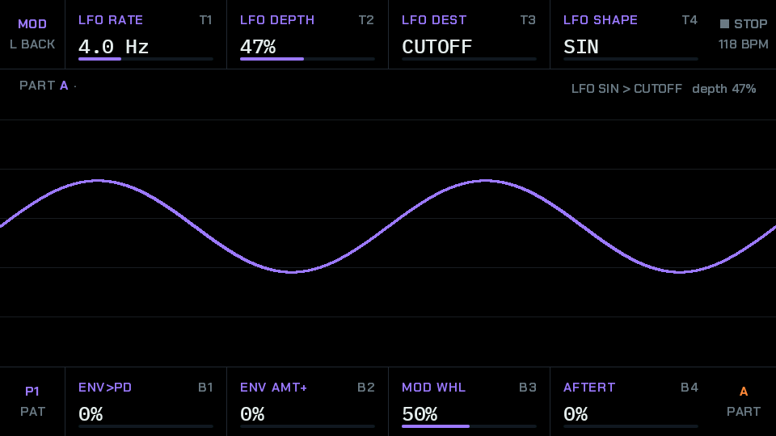
An LFO, a low frequency oscillator, is a slow wave that moves another setting up and down by itself.
LFO RATE, LFO DEST and LFO SHAPE are dim while LFO DEPTH is 0%.
The last two knobs answer a MIDI keyboard (MIDI in and out, page ).
| Knob | Name | Range | Default | What it does |
|---|---|---|---|---|
| T1 | LFO RATE | 0.2 to 12.2 Hz | 4.0 Hz | How fast the LFO moves. |
| T2 | LFO DEPTH | 0 to 100% | 0% | How far it moves. |
| T3 | LFO DEST | CUTOFF, PITCH, AMP, PD AMT | CUTOFF | What it moves. PD AMT moves the POSITION on a wavetable. |
| T4 | LFO SHAPE | SIN, TRI, SAW, SQR | SIN | The shape of the movement. |
| B1 | ENV>PD | 0 to 100% | 0% | Each note's start moves PD AMT, or the place in a wavetable. |
| B2 | ENV AMT+ | 0 to 100% | 0% | Opens the filter further at the start of each note. |
| B3 | MOD WHL | 0 to 100% | 50% | How far the mod wheel of a MIDI keyboard opens the filter. |
| B4 | AFTERT | 0 to 100% | 0% | How far pressing a held key harder on a MIDI keyboard opens the filter. |
GLOBAL
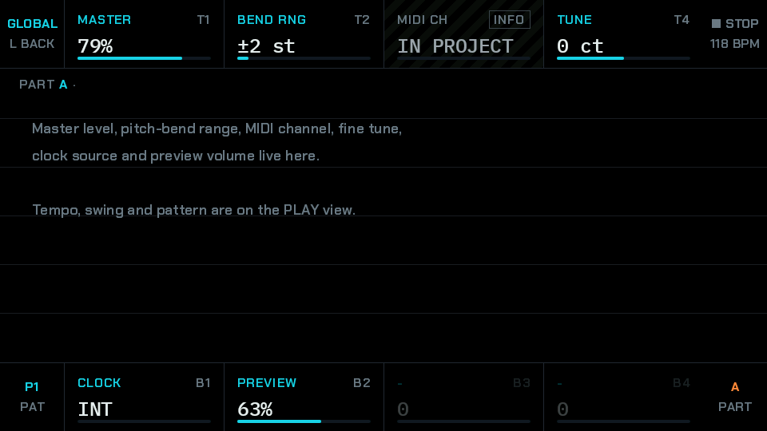
GLOBAL cannot be locked to a step. The MIDI CH box reads IN PROJECT: channels are set per lane, on PROJECT's MIDI view.
CLOCK can be turned, but it does nothing yet. Nemesis always runs on its own clock.
The note on the screen still names a clock source and a MIDI channel. Trust this table.
| Knob | Name | Range | Default | What it does |
|---|---|---|---|---|
| T1 | MASTER | 0 to 100% | 79% | The part's overall volume. |
| T2 | BEND RNG | ±0 to ±24 st | ±2 st | How far the pitch wheel of a MIDI keyboard bends a note. |
| T3 | MIDI CH | IN PROJECT | - | Information only. See MIDI in and out, page . |
| T4 | TUNE | −50 to +50 ct | 0 | Tunes both oscillators together. |
| B1 | CLOCK | INT, MIDI, SYNC | INT | Where the steps come from: INT is Nemesis itself, MIDI follows a MIDI clock, and SYNC follows the SYNC input. It is one setting for the whole project. See MIDI in and out. |
| B2 | PREVIEW | 0 to 100% | 63% | How loud a preset plays when you look through the list. |
Wavetables
A wavetable is a set of up to 32 wave shapes, one after another. Move through them and the tone changes, which a simple wave can't do.
Choosing one
Turn WAVE, T1 on OSC 1 or OSC 2, past SIN, TRI, SAW and SQR. The banks the card has come next, by name. The knob skips banks the card does not have. A bank's file is loaded when you pick it.
POSITION
With a bank chosen, PD SHAPE becomes POSITION, from 0 to 100% across the table, and PD AMT is dark. POSITION can be locked to a step, so each step can play another place in the table. The LFO's PD AMT destination and ENV>PD move it too, for tones that change while they sound. WAVE itself can't be locked.
What the card holds
The numbering has 200 banks. The install package holds the banks that the presets use, in CATHODE/WT. A bank has 32 frames, a few have 16, and each takes about 1 MB of memory while a part plays it.
When a bank is missing
A bank whose file is not on the card shows its name in red with a question mark, and plays the basic wave it is nearest to. The part still sounds, and the project is not changed.
When memory is full
Up to six banks fit in memory at once, shared with the samples. Past that, or when the samples have taken the room, the screen says WAVETABLE MEMORY FULL and that part plays a basic wave. A bank nobody plays is let go. See Recording, page for how the memory is shared.
About the voice-like banks
The banks called FORMANT, CHOIR, NASAL, THROAT, BREATH, WHISPER and the like give vowel-coloured tones, not voices: their peaks move with the note, as a voice's do not.
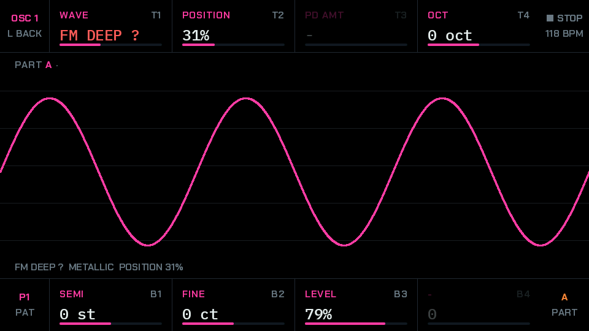
The sampler pages
A sampler plays recorded sounds. On a sampler part each lane has its own sample and its own pages, so the same keys open other pages than on a synth part.
| Key | On a synth part | On a sampler part |
|---|---|---|
| OSC 1 | OSC 1 | SAMPLE: the sample, and how it plays |
| OSC 2 | OSC 2 | SLICE. Again: SLICE EDIT |
| SUB | SUB | LOOP |
| FILTER 1 | FILTER 1 | FILTER, three models |
| FILTER 2 | FILTER 2 | Not on a sampler part: the screen says so |
| GRIT | GRIT | GRIT: all of it, as on a synth |
| AMP | AMP | AMP, with a choke group |
| MOD | MOD | The LFO moves CUTOFF, PITCH or AMP. ENV AMT+ adds to the filter's sweep, and MOD WHL and AFTERT move the cutoff. ENV>PD has no effect on a sample |
| GLOBAL | GLOBAL | GLOBAL |
These pages work on the selected lane of the part. If no lane plays the part, the screen says NO LANE PLAYS THIS PART: GIVE IT ONE WITH PLAYED BY.
SAMPLE
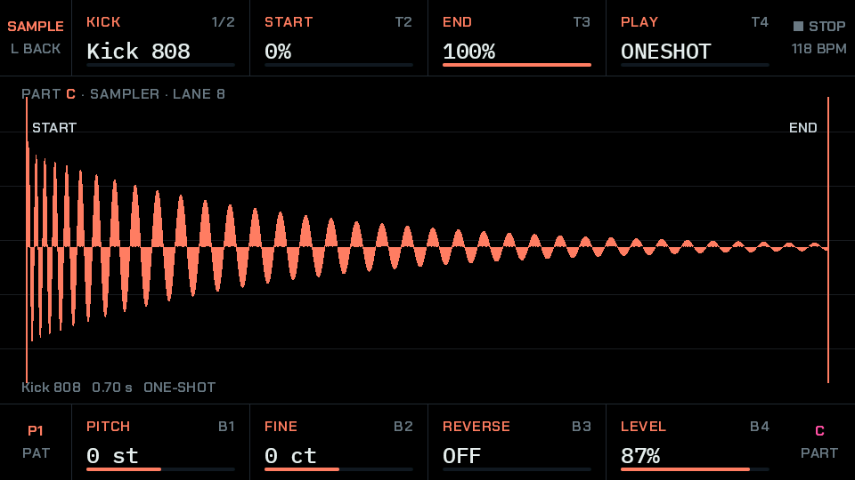
START and END choose the piece of the sample that plays. PLAY says how.
- ONESHOT plays to END whatever the gate.
- GATED plays while the note is held.
- LOOP goes round from END to START (Sample loops, page ).
| Knob | Name | Range | Default | What it does |
|---|---|---|---|---|
| T1 | SAMPLE | the card's samples | by lane | Picks the sample. With SHIFT held, it picks the folder. With a lock open, it is the step's sample. |
| T2 | START | 0 to 100% | 0% | Where playing begins. |
| T3 | END | 0 to 100% | 100% | Where playing stops. |
| T4 | PLAY | ONESHOT, GATED, LOOP | ONESHOT | How the sample plays. |
| B1 | PITCH | −24 to +24 st | 0 | Moves the pitch by piano keys. |
| B2 | FINE | −50 to +50 ct | 0 | Moves the pitch a tiny amount. |
| B3 | REVERSE | OFF, ON | OFF | Plays it backwards. |
| B4 | LEVEL | 0 to 100% | 87% | How loud the sample is. |
FILTER, AMP and GRIT on a sampler lane
| Knob | Name | Range | Default | What it does |
|---|---|---|---|---|
| T1 | MODEL | LP, BP, HP | LP | The kind of filter. |
| T2 | CUTOFF | 30 Hz to 16 kHz | 16 kHz | Where it starts to cut. |
| T3 | RESO | 0 to 100% | 8% | Rings around the cutoff. |
| T4 | DRIVE | 0 to 100% | 0% | Pushes it harder. |
| B1 | ENV AMT | 0 to 100% | 0% | The filter starts above CUTOFF and falls to it with each hit. |
| B2 | HPF | OFF, up to 2 kHz | OFF | Removes the lows. |
| Knob | Name | Range | Default | What it does |
|---|---|---|---|---|
| T1 | ATTACK | 2 ms to 2.5 s | 2 ms | How long the sound takes to rise. |
| T2 | DECAY | 2 ms to 2.5 s | 482 ms | How long it takes to fall to SUSTAIN. |
| T3 | SUSTAIN | 0 to 100% | 100% | The level held after that. |
| T4 | RELEASE | 2 ms to 2.5 s | 107 ms | How long it fades after the note ends. |
| B1 | VEL SENS | 0 to 100% | 63% | How much louder a harder hit plays. |
| B2 | LEVEL | 0 to 100% | 87% | How loud the lane is. |
| B3 | PAN | L100 to R100 | C | Left to right. |
| B4 | CHOKE | OFF, G1 to G4 | OFF | Hits in the same group cut each other, as an open hi-hat is cut by a closed one. |
A new project's hat on lane 10 is in choke group G1. GRIT works on a sampler lane as on a synth. COMPAND shapes the steps BITS makes, so it needs BITS below 16. LOOP ERR moves a loop's points a little on each lap, so it needs PLAY on LOOP.
The sample browser
A card holds thousands of samples, so a sample is reached in two moves: a folder, then a sample in it. Every knob that picks a sample works the same way.
- Turn it and it moves one sample inside the folder.
- Hold SHIFT and turn it and it moves one folder.
| Where | Knob |
|---|---|
| Home screen, on a sampler lane | B1 |
| Step editor, on a sampler lane | T1, the lane's sample |
| SAMPLE PER STEP | T1, the lane's sample. B1, the step's sample |
| Tracker's popover | B3, the step's sample |
| SAMPLE page | T1. With a step's lock open, the step's sample |
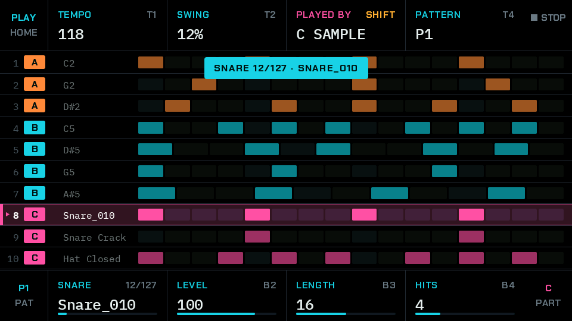
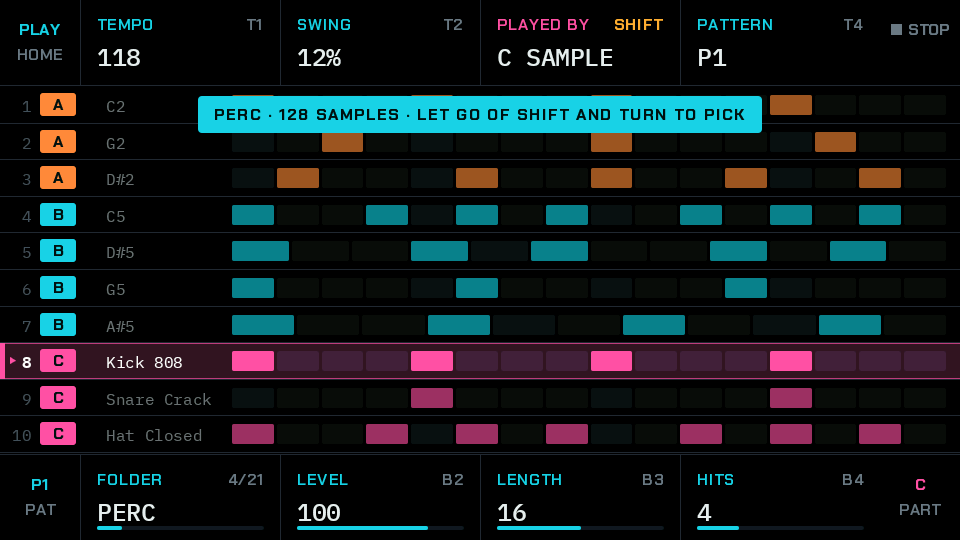
What the folder knob changes
Nothing that plays. The lane keeps its sample, and the knob only moves where it is looking. The sample on show is heard once when the knob stops. The first turn of the sample knob, either way, picks the sample on show. To leave without picking, turn the folder knob back, or simply leave it.
A pick is live
The lane plays the new sample at its next hit. SHIFT with ○CLEAR undoes a whole run of turns in one go. At the end of a folder the knob stops and says so.
On a step
A step with no sample of its own shows LANE, the knob's left stop. The first turn right picks the sample last used in that folder, so one sample can go on several steps with one turn each. Turning left past the first sample of a folder takes the lock off.
FILE
FFILE on a sampler part is the same list on a whole screen. It opens in the folder the lane's knob is in. ◁LEFT and ▷RIGHT or CATEGORY change the folder, and CATEGORY also has ALL, the whole list. Nothing changes until ‖‖OK. A folder chosen here is the one the sample knob is in afterwards, and the other way round. Takes are in the folder REC.
Previews
A preview reads the card, which takes a moment. A slow turn is heard at every click, and a fast turn where it stops. A sample over about 12 seconds says TOO LONG TO PREVIEW. It still plays on a lane.
Your own samples
Copy WAV files into a folder under Sample on the card, and they are there at the next start. The list holds 3,072 samples.
Slices
A slice is one piece of a recording. Cut a loop into slices and the sequencer can play them in any order, so one recording becomes a new rhythm. Nemesis finds the hits itself.
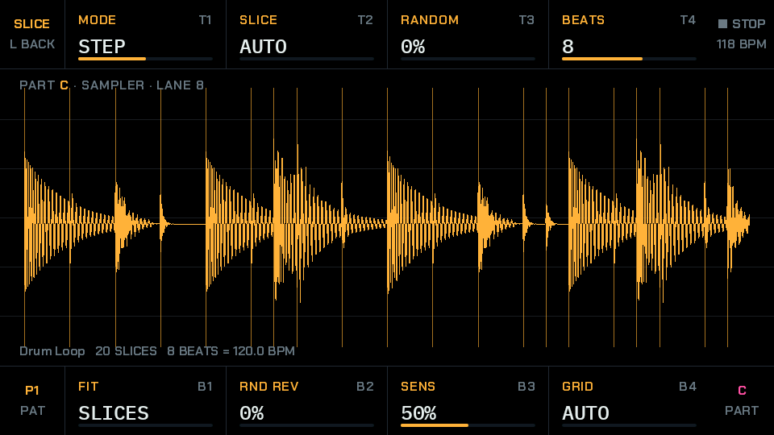
On a sampler lane press OSC 2. Turn MODE from OFF to STEP or SYNC, and Nemesis cuts the sample at the sudden hits it finds.
BEATS is guessed from the sample's length and the tempo when MODE comes on.
Turning SENS or GRID cuts the sample again, a moment after the knob stops. SHIFT with ○CLEAR undoes that, and hand edits come back with it.
| Knob | Name | Range | Default | What it does |
|---|---|---|---|---|
| T1 | MODE | OFF, STEP, SYNC | OFF | OFF plays the sample as ever. STEP: a step that plays gets a slice. SYNC: the loop plays by itself at the tempo. |
| T2 | SLICE | AUTO, or 1 to 32 | AUTO | AUTO, or always this slice. Can be locked. |
| T3 | RANDOM | 0 to 100% | 0% | The chance a hit plays any slice instead. Can be locked. |
| T4 | BEATS | 1, 2, 4, 8, 16, 32 | 8 | How long the loop is, in beats. |
| B1 | FIT | SLICES, PITCH | SLICES | At another tempo. SLICES: the pitch stays, so slices leave gaps or get cut. PITCH: the loop speeds up like a record. |
| B2 | RND REV | 0 to 100% | 0% | The chance a hit plays backwards. Can be locked. |
| B3 | SENS | 0 to 100% | 50% | How small an attack counts as a new slice. |
| B4 | GRID | AUTO, 4, 8, 16, 32 | AUTO | AUTO cuts at the attacks. A number cuts into equal parts. |
STEP
A step plays the slice of its place in the lane: step 3 plays slice 3, so the rhythm picks where the loop is chopped. In the step editor's second view, STEP SLICE locks a slice to a step. A step can lock RANDOM and RND REV too, and every other sampler knob: pitch, filter, level and reverse.
SYNC
The loop runs on the song's clock whatever the lane's rhythm. Each slice falls at its own place in the beats, so the feel stays at any tempo, and swing bends the steps it falls in. The lane's steps still work on top of it: a step's locks reach the slices it holds, STEP SLICE replaces them, and PROB can drop them. STOP and MMUTE end it.
MIDI
On a sliced lane alone on its MIDI channel, keys play the slices from the lane's note up. On a shared channel a lane has one note, so it plays its first slice. Give a sliced lane a channel of its own.
How slices sound together
A lane's slices cut each other, so a chopped loop is one voice. Notes of a chord start together and all sound. With PLAY on LOOP a STEP slice loops inside itself, with the LOOP page's fade, and SYNC slices play once.
SLICE EDIT
Press OSC 2 again on the SLICE page. Now the knobs work on one slice at a time, and once more leaves the page. A run of edits is one undo.
Where slices are kept
Slices belong to the sample, not the lane: every lane on that sample plays the same ones. A project holds the cuts of 16 samples, 32 slices each. If the file changes, the panel cuts it again. A sample missing from the card loses its cut.
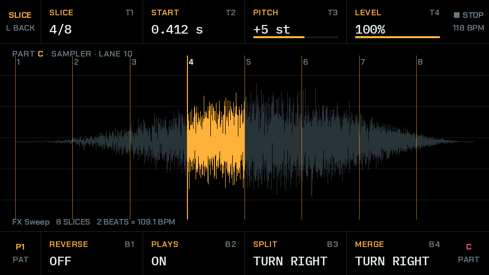
Press OSC 2 once more to leave: it goes back to the screen you came from, not to the SLICE page, and OSC 2 then opens the SLICE page again. A muted slice is skipped, and a run of edits is one undo.
| Knob | Name | What it does |
|---|---|---|
| T1 | SLICE | Picks a slice and plays it. |
| T2 | START | Moves its start, between its neighbours. |
| T3, T4 | PITCH, LEVEL | The slice's own. |
| B1 | REVERSE | The slice's own. |
| B2 | PLAYS | ON or MUTED. A muted slice is skipped. |
| B3 | SPLIT | Turn right: halves it at a zero crossing. |
| B4 | MERGE | Turn right: joins it to the one before. |
Sample loops
A loop plays a stretch of a sample round and round, so a short sound can last as long as its note. You choose where the stretch starts and ends, and then how its end joins its start, because a bad join clicks.
- On the SAMPLE page set START and END around the stretch you want.
- Turn PLAY to LOOP. A note that reaches END now jumps back to START until the note is over.
- Press SUB. The LOOP page shows the loop with the fade shaded at both ends, and the footer gives the time of one lap. The page is dim until PLAY is LOOP, and also on a lane in SYNC.
- Turn XFADE up to melt the join, or turn AUTO to let Nemesis look for a better join.
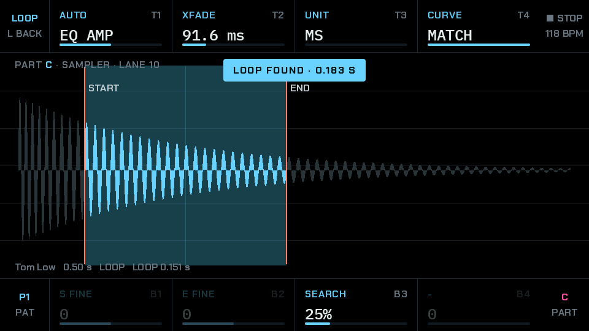
What fades in is the sound leading up to START. That needs sample before START. With START at the very beginning the lap gets shorter by the fade's length, so move START in if the lap has to be exact.
No setting makes a decaying note steady: a loop in a piano's decay still steps in level at each lap.
| Knob | Name | Range | Default | What it does |
|---|---|---|---|---|
| T1 | AUTO | OFF, EQ AMP, EQ POWER | OFF | OFF plays the knobs' points. The others look for better ones. |
| T2 | XFADE | OFF, up to 2 s or 50% | OFF | How long the end melts into the start. Can be locked to a step. |
| T3 | UNIT | MS, % | MS | MS, or a share of the loop. A fade is never more than half the loop. |
| T4 | CURVE | LINEAR, EQ POWER, LOG, MATCH | EQ POWER | The shape of the fade. |
| B1, B2 | S FINE, E FINE | −63 to +63 | 0 | Move the points by small steps inside one of START's and END's. Not used while AUTO is on. |
| B3 | SEARCH | 1 to 100% | 25% | How far from START and END AUTO may look. |
| Name | Use it for |
|---|---|
| LINEAR | Two ends in step, such as a held note on matching points. On unrelated sound it dips by about 3 dB. |
| EQ POWER | Two ends with nothing in common, such as noise or a texture. On sound in step it swells by about 3 dB. |
| LOG | The new sound arrives early and the old leaves late, close to EQ POWER. |
| MATCH | Works out the gains from how alike AUTO measured the ends to be, so neither case moves the level. With AUTO off it behaves like EQ POWER. |
AUTO
The search runs when the knobs have stopped. Until it lands the lane plays the knobs' points, and a sound already looping moves to the new points when it next starts. Turning AUTO sets CURVE to MATCH, and you can turn CURVE afterwards. A step that locks START or END plays the knobs' points, with no search.
EQ AMP looks for two rising zero crossings where the wave on both sides of the join is most alike. It often needs no fade at all. Use it on anything with a pitch.
EQ POWER looks for two steady places where the sound is equally loud over the length of the fade, then lines them up as well as the wave allows. Use it where you want a real fade.
So a sound with a pitch wants EQ AMP and no fade, and a sound without one, like noise, wants a fade of 50 ms or more.
Where it is kept
Found points go with the sample, in the project: 32 entries, one for each sample, START, END, AUTO, SEARCH and fade in use. With all 32 in use a further lane stays on its knobs' points. A sample missing from the card loses them.
Recording
REC, the large ring, opens the REC screen. It takes what comes in at the line input, or what the Drumboy itself is playing, and turns it into a sample. One recording is called a take.

Nothing records until you press REC again.
- REC starts, or arms when CAPTURE is AUTO. Pressed again it stops a take or gives up waiting.
- ‖‖OK keeps the take on the selected lane, if that lane is on a sampler. Otherwise it goes to FILE, under REC.
- ○CLEAR drops it.
On a finished take REC asks first, and a second press drops it and starts over. Leaving the screen keeps a finished take, so one is never lost by walking off.
| Knob | Name | Range | What it does |
|---|---|---|---|
| T1 | SOURCE | LINE IN, OUTPUT | OUTPUT is the Drumboy's own sound, effects and all: a way to freeze a part into a sample. |
| T2 | GAIN | +0 to +22.5 dB | The line input's gain, 1.5 dB a step. You want the meter high without reaching the end. |
| T3 | CAPTURE | MANUAL, AUTO | MANUAL starts on REC. AUTO waits for the sound. |
| T4 | THRESHOLD | −60 to −6 dB | The level, shown as a white line on the meter. |
| B1 | INPUT | L+R, LEFT, RIGHT | What goes into the take. A take is mono. |
| B2 | MONITOR | 0 to 100% | How much of the line input goes on to the outputs. |
| B3 | AUTO STOP | OFF, 0.5, 1, 2, 4 s | End the take after this long below the threshold, and leave that silence out. |
| B4 | ROOM | seconds | Information only: time left in memory while a take is running. |
AUTO capture
AUTO needs the input over the threshold for several samples, so one tick of noise does not start it. The 50 ms before that moment stay in the take, so the attack is not cut off. Keep the threshold above the noise of the source: the meter shows where that is.
What a take is
A take is mono, 16-bit, at 44.1 kHz, and a sample like any other: you can slice it, loop it and lock it. A take that hits full scale says so when it ends: lower GAIN and go again. ●ADD and MMUTE do nothing on this screen, so a slip of the finger does not change the project.
Where it goes
A take is saved as Sample/REC/RECnnnn.wav and read back from the card before it counts as saved. If that fails the message says why, and the take stays in memory only, named UNSAV01 and on. It lasts until the next project load or until the power goes, so a project saved with it cannot bring it back.
After a restart a take over about 12 seconds cannot be previewed, but it plays on a lane.
Memory
Samples and wavetables share one pool. Samples fill it from one end and wavetables from the other, and a recording goes in the free memory between them. So the room for a take is what the project leaves: about 108 seconds on an empty project, less with each wavetable and sample.
When the pool is full a wavetable is refused with WAVETABLE MEMORY FULL and a sample with SAMPLE MEMORY FULL. Samples the project no longer uses are dropped first when a sample needs the room. Until a take is kept or dropped, nothing new loads.
The sample list holds 3,072 samples. When it is full REC says so and does not start: a take that could not be kept is never recorded.
The effects
FX, the key at the bottom left, opens the effects. Press it again for the next of six views: DELAY, REVERB, CHORUS, COMP, AMP SIM and SENDS. +UP and −DOWN move between them too.
The delay, reverb and chorus are shared: there is one of each, and each part decides how much of itself to send to them. The compressor sits on the master, over everything. The amp simulator is per part: each of the seven has its own.
Each view draws what the effect is doing, and redraws with every turn. ○CLEAR puts a view's settings back to their defaults, and for AMP SIM and SENDS that means the part's own. SHIFT with ○CLEAR undoes it.
A shared effect that nothing sends to costs no CPU. On the compressor, ACTIVE switches it. Sends start at 0%, so a new project is dry.
SENDS
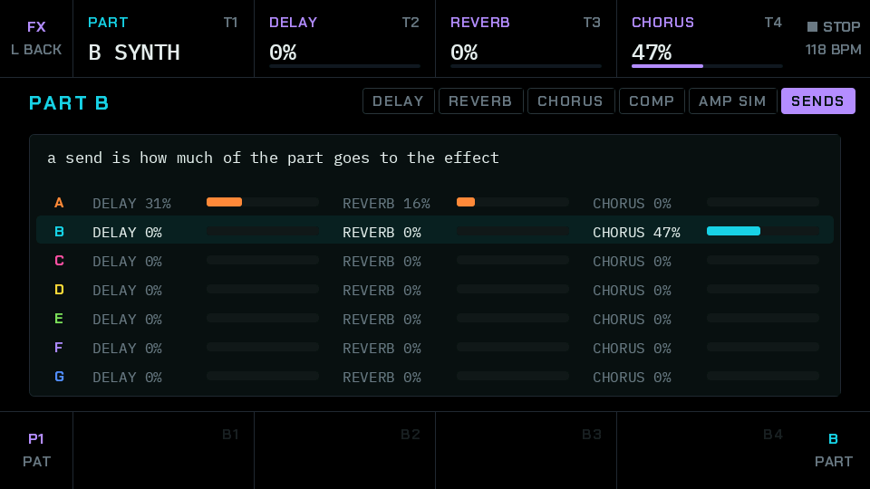
A send is how much of a part goes to a shared effect. At 0% that effect stays out of it.
You can lock a send to a step.
| Knob | Name | Range | Default | What it does |
|---|---|---|---|---|
| T1 | PART | A to G | - | The part you are setting. |
| T2 | DELAY | 0 to 100% | 0% | How much goes to the echo. |
| T3 | REVERB | 0 to 100% | 0% | How much goes to the room. |
| T4 | CHORUS | 0 to 100% | 0% | How much goes to the chorus. |
DELAY
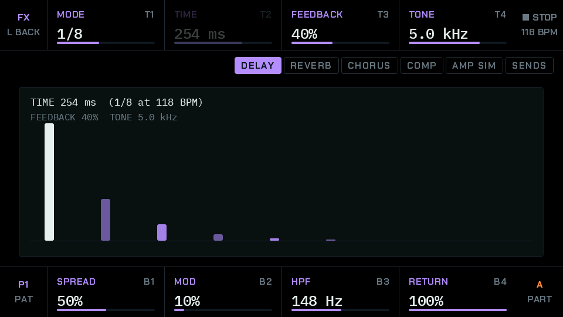
An echo. MODE FREE uses TIME, and the other modes follow the tempo: 1/8. is a dotted eighth and 1/8T a triplet. TIME is dark then and shows the time it follows.
| Knob | Name | Range | Default | What it does |
|---|---|---|---|---|
| T1 | MODE | FREE, 1/4, 1/8., 1/8, 1/16., 1/16, 1/8T, 1/16T | 1/8 | FREE uses TIME. The others follow the tempo. |
| T2 | TIME | 20 ms to 1 s | 300 ms | The gap between echoes. |
| T3 | FEEDBACK | 0 to 95% | 40% | How many times the echo repeats. |
| T4 | TONE | 500 Hz to 12 kHz | 5.0 kHz | Lower makes the echoes darker. |
| B1 | SPREAD | 0 to 100% | 50% | Moves the echoes between left and right. |
| B2 | MOD | 0 to 100% | 10% | Makes the echoes waver a little. |
| B3 | HPF | 20 Hz to 1 kHz | 150 Hz | Removes the lows from the echoes. |
| B4 | RETURN | 0 to 100% | 100% | How loud the echoes are. |
REVERB
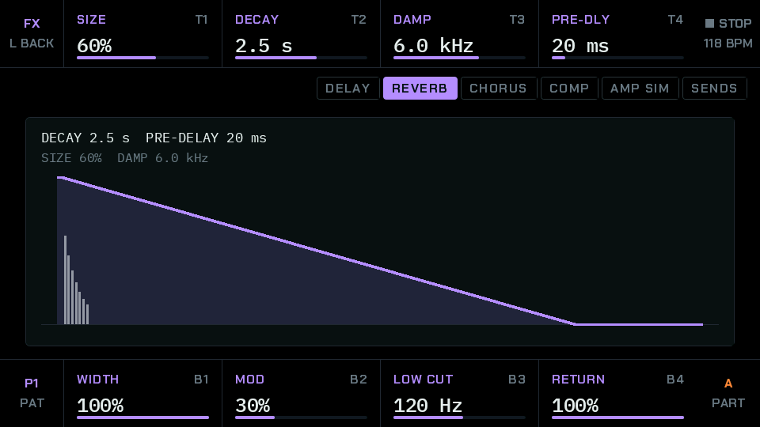
A room around the sound. Low cut and return level keep it out of the way of the mix.
| Knob | Name | Range | Default | What it does |
|---|---|---|---|---|
| T1 | SIZE | 0 to 100% | 60% | How big the room sounds. |
| T2 | DECAY | 0.2 to 12 s | 2.5 s | How long the room rings. |
| T3 | DAMP | 1 to 16 kHz | 6.0 kHz | Lower makes the ringing darker. |
| T4 | PRE-DLY | 0 to 200 ms | 20 ms | A short wait before the room answers. |
| B1 | WIDTH | 0 to 100% | 100% | How wide the room sounds. |
| B2 | MOD | 0 to 100% | 30% | Keeps the ringing moving, so it sounds less metallic. |
| B3 | LOW CUT | 20 to 600 Hz | 120 Hz | Removes the lows from the room. |
| B4 | RETURN | 0 to 100% | 100% | How loud the room is. |
CHORUS
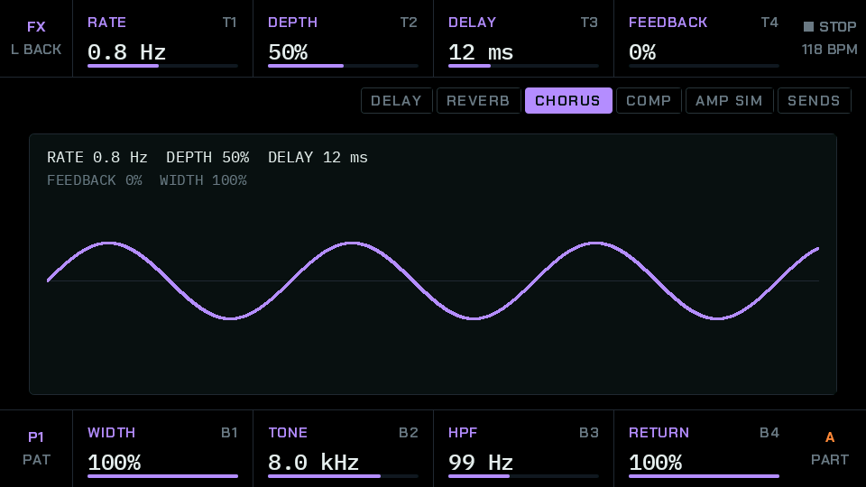
Wavering copies of the sound, for a wider, softer result.
| Knob | Name | Range | Default | What it does |
|---|---|---|---|---|
| T1 | RATE | 0.1 to 8 Hz | 0.8 Hz | How fast the copies waver. |
| T2 | DEPTH | 0 to 100% | 50% | How far they waver. |
| T3 | DELAY | 5 to 30 ms | 12 ms | How far behind the sound the copies play. |
| T4 | FEEDBACK | 0 to 70% | 0% | Feeds the copies back in for a sharper tone. |
| B1 | WIDTH | 0 to 100% | 100% | How wide they spread. |
| B2 | TONE | 1 to 16 kHz | 8.0 kHz | Lower makes the copies darker. |
| B3 | HPF | 20 Hz to 1 kHz | 100 Hz | Removes the lows from the copies. |
| B4 | RETURN | 0 to 100% | 100% | How loud the copies are. |
COMP
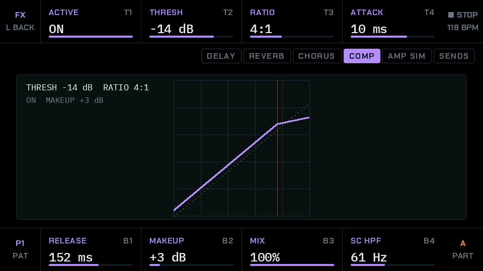
A compressor turns the loudest moments down, so the mix sounds tighter and can then be turned up. It works on the master, after everything else.
| Knob | Name | Range | Default | What it does |
|---|---|---|---|---|
| T1 | ACTIVE | OFF, ON | OFF | Turns it on. |
| T2 | THRESH | −60 to 0 dB | −18 dB | Sound above this level is turned down. |
| T3 | RATIO | 1.5:1, 2:1, 3:1, 4:1, 6:1, 8:1, 12:1, 20:1, INF | 4:1 | How hard it is turned down. INF is a limiter. |
| T4 | ATTACK | 0.1 to 100 ms | 10 ms | How fast it reacts. |
| B1 | RELEASE | 10 ms to 1 s | 150 ms | How fast it lets go. |
| B2 | MAKEUP | 0 to +24 dB | +3 dB | Turns everything back up afterwards. |
| B3 | MIX | 0 to 100% | 100% | Blends in the sound without compression. |
| B4 | SC HPF | 20 to 300 Hz | 60 Hz | The compressor does not hear the lows under this, so a kick does not pull the whole mix down. |
AMP SIM
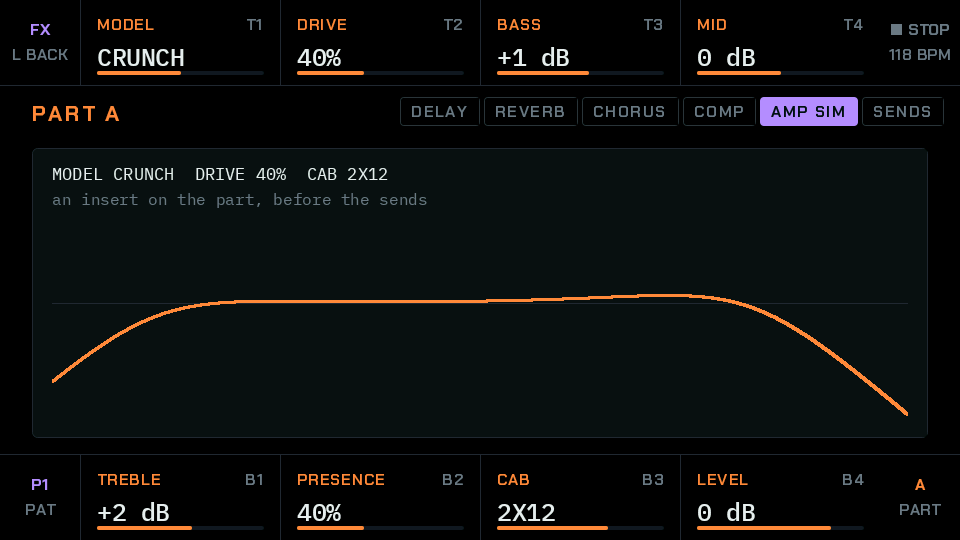
A guitar amplifier for one part alone, for warmth or dirt. OFF leaves the sound alone and costs nothing.
You can lock its knobs to a step, all but MODEL and CAB. An amp that is off stays off.
| Knob | Name | Range | Default | What it does |
|---|---|---|---|---|
| T1 | MODEL | OFF, CLEAN, CRUNCH, LEAD, BASS | OFF | The kind of amp. |
| T2 | DRIVE | 0 to 100% | 40% | How hard the amp is pushed. |
| T3 | BASS | −12 to +12 dB | 0 dB | Raises or lowers the lows. |
| T4 | MID | −12 to +12 dB | 0 dB | Raises or lowers the middle. |
| B1 | TREBLE | −12 to +12 dB | 0 dB | Raises or lowers the highs. |
| B2 | PRESENCE | 0 to 100% | 40% | Adds bite at the very top. |
| B3 | CAB | OFF, 1X12, 2X12, 4X12 | 2X12 | The speaker box it plays through. |
| B4 | LEVEL | −24 to +6 dB | 0 dB | How loud the amp is. |
Mixer, voices and the CPU
A small computer plays every voice, so sounds have a cost. Nemesis shows that cost before you hit a wall, and says what it would do about it. RMIXER opens four views, one press apart.
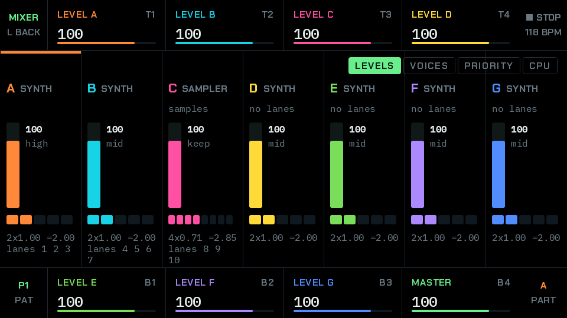
T1 to T4 are parts A to D, B1 to B3 are E to G, and B4 is MASTER. A part's level turns down everything it plays, on all its lanes.
Under each column are one block for each voice the part owns, and the lanes it plays. A block turns white while that voice sounds.
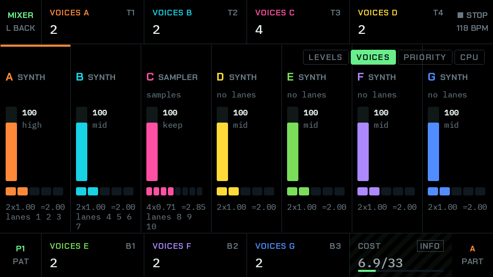
The same knobs set how many notes each part can play at once: 1 to 5 on a synth, 1 to 8 on a sampler.
Each voice costs CPU. A chord needs a voice for each note, and when a part runs out, its oldest note goes first.
PRIORITY
The third view gives each part a priority: LOW, MID, HIGH or KEEP. It says which parts matter most if the CPU runs short. A new project has A on HIGH, the drums on C on KEEP, and the others on MID.
The budget
The cost of a sound is counted in plain voices. One plain voice is one oscillator through one light filter, and the project's budget is 33 of them. Options add to a voice's cost, and the small numbers in some knob boxes say by how much. A part no lane plays costs nothing. A shared effect that no part sends to costs nothing.
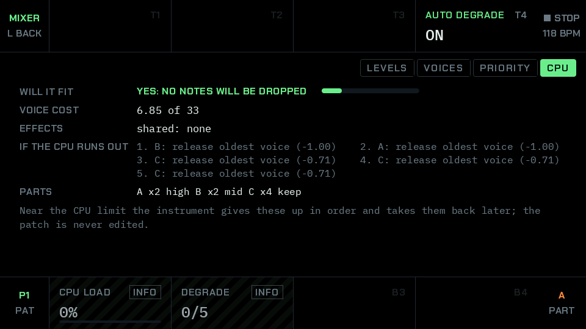
- WILL IT FIT: YES, OVER BUDGET, or what is being given up right now.
- VOICE COST and EFFECTS: what they add up to, in the same units.
- IF THE CPU RUNS OUT: the first things to go, in order, with what each saves.
- PARTS: the priorities behind that order.
T4 AUTO DEGRADE turns it on or off. B1 CPU LOAD and B2 DEGRADE only show numbers.
What degrades
When the processor gets close to its limit, Nemesis gives things up in a fixed order instead of crackling. It takes them back when there is room. Your sound is never edited: nothing is deleted, and the settings stay as you set them.
- First, one voice goes from the part with the lowest priority.
- Then costly options are bypassed, the biggest saving first. The shared effects count as the lowest priority of all, so they go first: reverb, delay, compressor and chorus, those in use. Then each part in turn, from LOW to KEEP, loses whichever option saves the most: the amp, filter 2, unison width, unison (always after the width), filter drive, oscillator sync or the GRIT converter. The order depends on the sound, and the CPU view lists it.
- Last, every part comes down to one voice.
Among parts of equal priority, the later letter goes first. Each step appears on the screen as it happens, as DEGRADE 1 and the name of the step, and RESTORED when it comes back. A red badge in the corner shows the level.
Turning AUTO DEGRADE off stops all this, and a project that asks for too much will then crackle. A render to a file never gives anything up (Export: WAV, stems and MIDI, page ).
Patterns, FILL, COPY, PASTE and undo
A pattern is all ten lanes with their steps. A project holds 16, P1 to P16, and a pattern lasts as long as its longest lane.
Picking a pattern
T4 on the home screen walks all 16. Hold SHIFT and press key 1 to key 10 for P1 to P10. When stopped, the change comes at once. While playing, it waits for the end of the current pattern, so it always lands in time: T4 shows P1 ▸P5 and the corner ▸P5. Pick the pattern that is playing to stay on it. While a song plays, the song chooses.
FFILL
Hold FFILL and every Euclid lane plays twice its hits, up to its length. Let go and the lane is back.
MMUTE
MMUTE silences the selected lane, and again brings it back. A muted lane keeps its place, so you can take instruments in and out while the music plays. A mute belongs to the lane in that pattern.
CCOPY and PPASTE
CCOPY copies the selected lane, and PPASTE puts it on the lane you are on. The lane keeps its own part. SHIFT with CCOPY and PPASTE does a whole pattern. On the SONG screen they do a whole song. What you copied stays through a project load, so you can carry a pattern into another project.
Making a variation
Copy P1 with SHIFT and CCOPY, pick an empty pattern, and paste with SHIFT and PPASTE. Now change one thing. That is the quick way to a second part of a track.
Undo
SHIFT with ○CLEAR undoes the last big change. There is one level, and each new undoable action takes the place of the one before. The screen says what came back, as UNDONE and its name.
| Undo brings back | Notes |
|---|---|
| Clearing a lane, or emptying it with two presses | One undo brings back what was there before the first press. |
| Emptying the pattern with a long press of ○CLEAR | All of it. |
| PASTE of a lane, a pattern or a song | |
| Loading a preset | Its sound, voices, sends and amp. A shared effect comes back only if you have not changed it since. |
| A sample picked for a lane or a step | A whole run of turns counts as one. |
| SLICE: a new cut from SENS or GRID, and a run of edits | |
| A view of FX put back to its defaults | |
| A song row removed | |
| Tracker edits | Everything while the popover stays open is one. |
| Making a part a synth or a sampler | |
| Loading a project, overwriting a slot, deleting a slot | See Projects, page . |
Knob turns are not undone: they are live, and you can turn them back. The new rhythm from ●ADD, a tapped step, and clearing a step's locks with ○CLEAR have no undo either.
Songs
One loop doesn't make a track. A song is a list of rows, and each row plays one pattern a number of times. A project holds 8 songs, each with up to 64 rows.
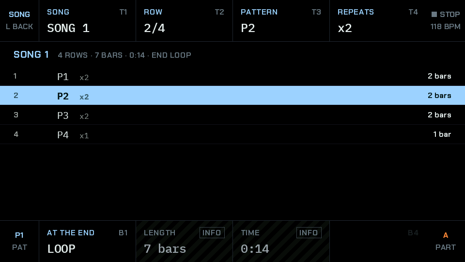
- +UP, −DOWN: pick a row.
- ●ADD: add a copy after it.
- ○CLEAR: remove it, with undo.
- CCOPY, PPASTE: a whole song.
- PLAY: play from the selected row.
- ‖‖OK: the same, or while a song plays, jump to this row at the end of the current pattern.
- SSONG: go back.
| Knob | Name | Range | What it does |
|---|---|---|---|
| T1 | SONG | SONG 1 to 8 | Which song. Stop the song to pick another. |
| T2 | ROW | 1 to rows | The row. |
| T3 | PATTERN | P1 to P16 | The pattern this row plays. |
| T4 | REPEATS | x1 to x16 | How many times. |
| B1 | AT THE END | LOOP, STOP | Round again, or stop. |
| B2 | LENGTH | bars | Information only. |
| B3 | TIME | m:ss | Information only, at the current tempo. |
While a song plays, it chooses the pattern, the top right corner says SONG, the bottom left shows the pattern, and you can still edit what plays. A new song is empty: ●ADD adds the first row, on the pattern on screen.
Key and scale
Press IPROJECT. With a scale set, every note the sequencer plays on a synth part snaps to the nearest note of that scale, so no step can sound wrong. Notes played in from a MIDI keyboard are not moved.
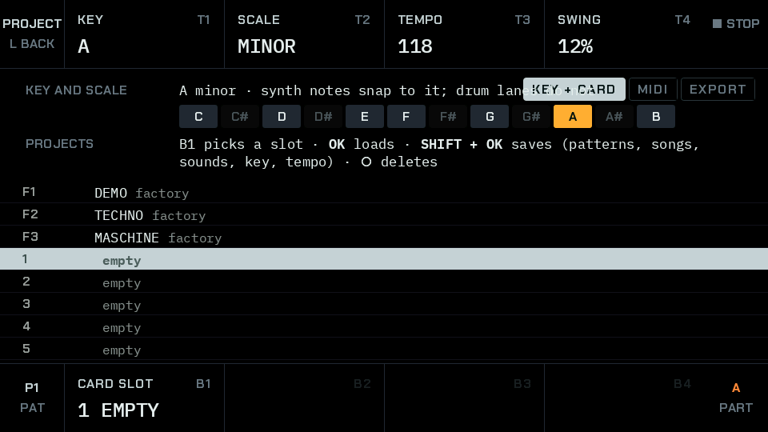
- T1 KEY: C to B.
- T2 SCALE: below.
- T3 TEMPO, T4 SWING: the same as on the home screen.
A note exactly between two notes of the scale goes down. Chords and arpeggios are moved note by note, so they stay in key.
Sampler lanes are never moved. The step editor's NOTE row shows the note that will really sound, and the lane header shows the key.
| Name | Semitones from the key | Sounds like |
|---|---|---|
| OFF | all twelve | Notes play as written |
| MAJOR | 0 2 4 5 7 9 11 | Bright |
| MINOR | 0 2 3 5 7 8 10 | Dark |
| DORIAN | 0 2 3 5 7 9 10 | Minor with a lift |
| PHRYGIAN | 0 1 3 5 7 8 10 | Dark and tense |
| LYDIAN | 0 2 4 6 7 9 11 | Bright and floating |
| MIXOLYD | 0 2 4 5 7 9 10 | Major with a bluesy edge |
| LOCRIAN | 0 1 3 5 6 8 10 | Unstable |
| HARM MIN | 0 2 3 5 7 8 11 | Minor with a strong pull home |
| MEL MIN | 0 2 3 5 7 9 11 | Minor with a major top |
| MAJ PENT | 0 2 4 7 9 | Five notes, open |
| MIN PENT | 0 3 5 7 10 | Five notes, for riffs |
| BLUES | 0 3 5 6 7 10 | Minor pentatonic with the blue note |
In the tracker, turn IN SCALE on with T4, and NOTE walks only the notes of the scale.
Projects
A project on the card is one file, with the save before it kept as a second file: 16 patterns with every lane, step, lock, chord and per-step sample, 8 songs, the seven parts' sounds, the effects, the slices, the MIDI lanes, key, scale, tempo, swing and master level.
A Drumboy starts with an empty project: the lanes and sounds are there, with nothing to play.
The list is one scroll: F1 to F3, then slots 1 to 30.
The empty project is not on the list. To get one back, switch off and on.
| Key | On a factory row | On a card slot |
|---|---|---|
| ‖‖OK | Load a copy | Load it. An empty slot says so. |
| SHIFT with ‖‖OK | Says to pick a card slot | Save the project here |
| ○CLEAR, twice | A factory project cannot be deleted | Delete the slot |
| SHIFT with ○CLEAR | Undo | Undo |
Factory projects
They are in the firmware, so they are there on any card. Nothing can overwrite them. Loading one gives a copy to change and save to a slot, and it keeps its name in its first slot.
F1 DEMO is the sound of the tutorial: four patterns and a song, on bass, lead and drums, at 118 BPM.
F2 TECHNO is F minor at 132 BPM: one acid line, one chord stab, and the rest drums, with all the movement in locks.
F3 MASCHINE is a straight, robotic electro at 124 BPM, where a bass filter steps up on every note, and bleeps are made from the lead by locks alone.
Both new ones use only the built-in samples.
Saving
A slot takes the name PROJECT and its number the first time. Each save reads the newest copy, writes the older one, and checks what it wrote. The card, page tells more. Saving over a slot can be undone until the next undoable action, within this session.
Loading
Loading stops the music. If a load had to fall back on the older copy, the message says LATEST SAVE DAMAGED and THE ONE BEFORE IT. If samples are missing it counts them. A project that uses a preset the card lacks still sounds right, because the sound itself is saved in the project. It only shows no preset name.
Deleting
Delete removes the project from the card and leaves what is in memory alone. There is no copy on the card. The undo is a copy in memory, and it is gone with the power or the next undoable action. A project that cannot be read takes one press more, and says it has no undo.
If you have started a sound you like, save before you try anything risky. The undo is one level, and only saved work survives the power.
Presets
Presets are ready-made sounds for a synth part. There are 200: three in the firmware, and 197 as files on the card, in 11 types.
| Knob | Name | What it does in FILE |
|---|---|---|
| T1 | BANK | Information only. |
| T2 | CATEGORY | ALL, BASS, LEAD, PAD, PLUCK, STAB, POLY, KEYS, FX, SEQ, TEXTURE, BELL. ◁LEFT and ▷RIGHT do the same. |
| T3 | PART | Which part you are browsing for. |
| T4 | INSTRUMENT | With SHIFT: make the part a synth or a sampler. |
| B1 | SCROLL | One at a time. +UP and −DOWN do the same. |
| B2 | SCROLL x3 | Three at a time. |
| B3, B4 | OK, SCROLLING | Reminders: OK loads, and scrolling plays. |
Loading
A pause on a synth preset plays three notes on a temporary copy, in the project's key. ‖‖OK loads it. A preset from the card brings all nine pages, the voices it was made for, and its sends and amp. A built-in one sets only the knobs named on The synth pages, page , leaves the voices alone, puts the part's sends at 0 and turns its amp off. A shared effect takes the preset's settings only if no other part sends to it. If the voices would not fit the budget with the effects, they are trimmed, and the message says so. FFILE leaves without loading.
A card without the CATHODE folder gives you only the three built-in presets: Iron Squelch, Sub Pressure and Dimension Bloom.
Saving your own
On a sound page or in FILE, hold SHIFT and press ‖‖OK. SAVE PRESET opens for the part you are on. It works on a synth part with no lock open.
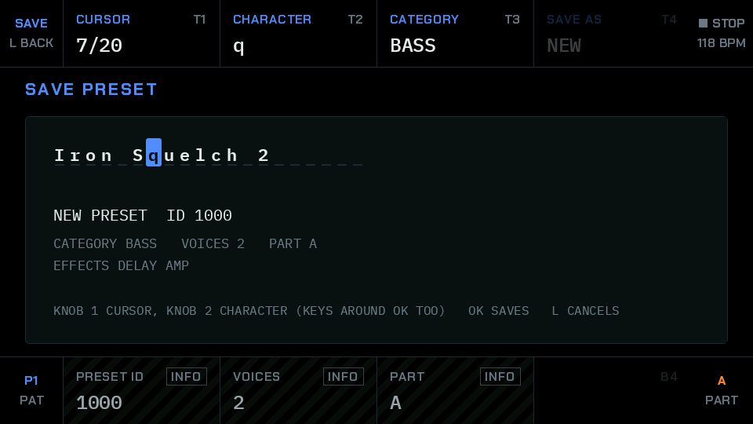
It shows the new preset's number, its type, voices and part, and which effects it carries.
| Knob | Name | What it does |
|---|---|---|
| T1 | CURSOR | Moves in the 20-character name. ◁LEFT and ▷RIGHT do the same. |
| T2 | CHARACTER | Changes the character. +UP and −DOWN do the same. |
| T3 | CATEGORY | The type it is filed under. |
| T4 | SAVE AS | NEW, or REPLACE for a sound from the card. |
| B1 to B3 | PRESET ID, VOICES, PART | Information only. |
‖‖OK saves and LBACK cancels. A new preset gets the next number from 1000. REPLACE asks for ‖‖OK a second time within four seconds, and rewrites that preset. There is no undo for a saved preset.
What is saved: the nine pages, the voices, the part's sends and amp, and the settings of the shared effects it sends to. What is not: p-locks, chord and arpeggio settings, the part's level and priority, and the compressor.
Adding presets to the card
A preset is one small .PRS file. Copy it into CATHODE/PRESETS and restart: the list is read at the start. After a change every start reads all the files, until the next save of a project or a preset writes the list to the card. After that starts are quick. Up to 1,024 files fit. A damaged file is left out, and a message at the start says how many. The website's preset editor makes these files (The web tools, page ).
Export: WAV, stems and MIDI
A finished song can leave Nemesis. Press IPROJECT until EXPORT is lit. B1 picks the song, B2 picks what to make, and ‖‖OK starts. STOP gives up. A song with nothing to play makes no files: the screen says NOTHING PLAYS IN THIS SONG.

The screen shows how far it has come. There is no sound while a render works.
| Name | What it makes |
|---|---|
| SONG WAV | The whole song: stereo, 16-bit, 44.1 kHz, effects and all, with the effects' tail. |
| STEMS | A WAV for each lane that plays. They all start at the start of the song, so they line up in any editor. |
| MIDI FILE | A Standard MIDI File, type 1: a tempo track and a track for each lane that plays. |
Where the files go
To the card, in Export/<project>/, as Song 1.wav, Song 1 lane 08 Kick 808.wav and Song 1.mid. A file already there is never touched: the new one becomes Song 1 (2).wav.
How a render works
A render is silent and can take a while, and the screen shows how far it has come. What was sounding dies away first, so it is not in the file. The song then plays once with its loop off, and goes on until two seconds have been silent, twelve at most, so the effects ring out. Muted lanes stay muted. No MIDI goes out, and what comes in is dropped. Afterwards the pattern and song on screen are as they were.
A render never gives up a voice, so it can hold more than live playing can.
Stems
A stem is the whole song again with one lane let through, so it takes longer. A step's PROB falls the same way in every stem and in the mix. Each stem keeps its effects. The stems do not add up to the mix exactly: the master compressor hears one lane at a time, and a free-running LFO is somewhere else each time.
MIDI file
The notes come from the real sequencer, so Euclid rhythms, tapped steps, chords, strums, arpeggios, swing and the scale are in the file as they play. A step with a PROB plays or not once. Each track is on the lane's MIDI channel, or a channel of its own if the lane's MIDI is off, and a lane's notes are what its MIDI out sends. The notes are on a 480 PPQ grid, 480 ticks to a quarter note. Locks are not in the file. A file holds 24,000 notes at most: a song with more says TOO MANY NOTES FOR A MIDI FILE and makes no file. What plays plays on while the file is made.
On the card
The first write after a start reads the whole card first. Closing a file reads all of it back, which is the CHECKING on the screen. STOP or a full card takes the unfinished file away, and stems finished before that stay. A power cut can leave part of a file: a computer can delete it. Samples that do not fit or will not load are missing from the render, and the message at the end says how many.
On the computer
The web version makes the same files as downloads, and stems arrive as one zip. The librarian page can also ask a Drumboy for a song's MIDI file over the cable, on the same terms as the rest of the librarian (The web tools, page ).
MIDI in and out
Each lane has its own MIDI channel and note, in and out. Press IPROJECT twice for the MIDI view. A cable to the MIDI sockets plays lanes from a keyboard or a computer, and lanes play other instruments.
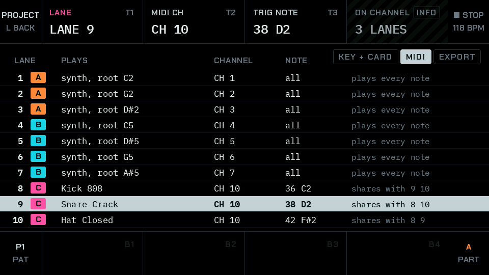
A new project has lanes 1 to 7 on channels 1 to 7, and the three drum lanes on channel 10 as kick 36, snare 38 and closed hat 42, the General MIDI drum map.
+UP and −DOWN or T1 pick the lane. Settings hold for lane n of every pattern.
| Knob | Name | Range | What it does |
|---|---|---|---|
| T1 | LANE | LANE 1 to 10 | The lane you are setting. |
| T2 | MIDI CH | OFF, CH 1 to 16 | The channel it listens and sends on. |
| T3 | TRIG NOTE or BASE NOTE | 0 to 127 | The note that plays it on a shared channel. On a sampler lane alone on its channel, the note that plays it at its own pitch. |
| T4 | ON CHANNEL | ALONE, or how many lanes | Information only. |
Notes in
A synth lane alone on its channel plays every note at the note's pitch. A sampler lane alone is moved by the note's distance from its BASE NOTE. On a shared channel, a note plays the lane whose trigger note it is: a synth lane at its root, and a sampler lane at its own pitch.
Notes play the part of that lane in the pattern playing, through its voices, with the sequencer running or not.
Notes out
Going out it is the same rule backwards. What a lane plays goes out on its channel: a synth lane its notes, a drum lane alone on a channel its note moved by the step's pitch, and a lane on a shared channel always its trigger note.
Controllers in
- Pitch bend, up to BEND RNG on the part's GLOBAL page.
- The mod wheel (controller 1) opens the filter, by MOD WHL on the MOD page.
- Channel pressure opens the filter, by AFTERT.
- All sound off, all notes off and reset controllers are obeyed.
They go to the part of each lane on that channel, or the part on screen if no lane is.
What is not there
With GLOBAL's CLOCK at INT, Nemesis sends a MIDI clock with start and stop while it plays, and pulses at SYNC out: two to a quarter note, with a gate that is up while it plays. Set CLOCK to MIDI and it follows a MIDI clock: START, CONTINUE and STOP work, each sixth tick is a step, the tempo on screen follows, and it passes the clock on to the MIDI and SYNC outputs. At SYNC it follows two pulses to a quarter note at SYNC in, and passes them on. Swing does not apply to a clock from outside, and PLAY waits for the first tick or pulse. A SYNC pulse has to last at least a millisecond. In a web browser nothing can send a clock, so Nemesis keeps its own there. A sustain pedal holds notes played in from a keyboard. It has no program change and no USB MIDI: the USB-C socket is for power.
The web tools
The website runs the firmware's own code in your browser. Nothing here replaces the Drumboy. Online Nemesis and the tutorial cannot touch your card. Only the preset librarian can, and only over a real MIDI cable. Reading over it is proven, sending and deleting are not yet: see below.
Online Nemesis
The same panel, the same screen and the same sound engine, drawn in a browser. It needs a wide screen, so turn a phone sideways or use a computer. Press Start audio, then use it as you would the Drumboy.
What differs from the hardware:
- It starts on the demo project, not an empty one.
- It has the 12 built-in samples and all 200 presets, and no SD card.
- The card is a pretend one, gone when you close the page. EXPORT sends files to your browser as downloads.
- A drum loop stands in for the line input, and a take stays in memory until the page goes.
- There are no MIDI sockets on the page.
- The knobs have stops. Drag one up or down: 160 pixels covers its whole range. The wheel, or the arrow keys on a clicked knob, go one step.
- SHIFT stays down when clicked, until the next key has been pressed.
Tutorial
Sixteen lessons beside the working panel, listed in Where to go next, page . The control to use flashes, and the page waits until the firmware shows you did it. A Show me button can do a step for you. Each lesson starts from a Drumboy as it boots, so nothing you did before can change what it says. Your progress stays in the browser.
| Computer key | Panel | Computer key | Panel |
|---|---|---|---|
| 1 to 9, 0 | key 1 to key 10 | M, F, S | MMUTE FFILL SSTEP |
| Space | PLAY | C, P | CCOPY PPASTE |
| Esc | STOP | L, I, O | LBACK IPROJECT SSONG |
| Enter | ‖‖OK | X, B, N, E | FX FFILE DPART RMIXER |
| Arrow keys | +UP −DOWN ◁LEFT ▷RIGHT | Q, W, T | OSC 1 OSC 2 SUB |
| + or =, and - | +UP and −DOWN | A, D, G | FILTER 1 FILTER 2 GRIT |
| Shift | SHIFT | H, J, K | AMP MOD GLOBAL |
| Backspace, and . | ○CLEAR and ●ADD | R | REC |
Preset librarian
The librarian talks to a Drumboy Pro over MIDI, through a USB-MIDI interface wired to both sockets. Over a real cable it has listed the presets, backed them up and saved a song as MIDI. Sending and deleting presets write to the card, and they have not yet been tried on a real one, so keep a copy of your card first. To try them without a card, use the simulated device. It is a program in the page, not a Drumboy Pro, and nothing you do with it reaches a card.
The librarian's job is to keep presets on a computer and on the card: list what is on the device, back up one or all as .PRS files, add files from the computer, and delete. It asks before it adds or deletes. Every transfer is checked as a whole, and a transfer that fails is not resumed: the page tells you, and you start it again.
The built-in three are listed and can't be changed. A device can also send a song's MIDI file.
A real connection will need a USB-MIDI interface wired to both sockets, in and out, and a browser with Web MIDI that allows system exclusive messages. Chrome and Edge have it. Firefox needs a permission add-on, and Safari does not have it.
Preset editor
The librarian page also has an editor. Open a preset from the list or from a file, or start a new one. Every value is on a slider or a list, with a line that says what it does, on the same pages as the panel. Hear it plays the preset on the real voice. Save it as a .PRS file to copy to the card by hand, which works today with no cable at all: put it in CATHODE/PRESETS and restart.
The card
Your SD card holds the samples, the presets, the wavetables, your projects and your exports. It must be FAT32.
Sample and System come with the Drumboy. Nemesis makes the folders it needs at the first save.
How saving works
The aim is simple. On a healthy card, a save either completes, or the previous version stays, and the card stays readable on a computer. That is what the design aims at. It is not a guarantee, and it does not mean a card can never be corrupted.
- Starting up writes nothing, with one exception: a preset replace that a power cut stopped half way is finished at the next start, after the check below. Otherwise a card that is only played from stays as it came.
- The whole card is checked before the first write after a start. It reads every folder and file record and writes nothing. A damaged card would get more damaged by writing to it, so a damaged card is refused.
- A fault stops all writing until the next start. Reading goes on, so the music plays on.
- Every save is read back from the card before it counts.
- Projects are two files, taken in turn. A save overwrites the older one, so the one before it stays.
- Nothing is repaired or formatted by Nemesis. The one thing it clears, before the first write, is old data behind a folder's end, which no reader can see. If there is too much of it the card is refused.
Power cuts have only been tested in simulation, not on real hardware or real cards. If the power goes during a save, or a card fails, you can lose data. A power cut can destroy more than the file being written, and no scheme of files can save what a damaged folder held. Keep a copy of your card on a computer.
If a save says the card has a problem
Nemesis has found damage, or a write has failed, and it will not write to the card. It still plays. Nothing is lost by carrying on playing, but what you changed since your last save can't be saved until the card is put right.
- Switch off and take out the card. Put it in a computer. If the computer offers to format it, say no.
- Copy everything you can to the computer.
- Run a disk check. Windows: right-click the card, Properties, Tools, Check. macOS: Disk Utility, First Aid.
- Put the card back and switch on. The check runs again at the first save.
- If it is refused again, copy the card to a new one, formatted FAT32.
A save that fails says NOT SAVED and one of these reasons. A failed export says NOT EXPORTED or EXPORT FAILED and the same reasons.
| Message | What it means |
|---|---|
| READ ERROR | The card did not answer while being checked. |
| WRITE ERROR, RESTART TO RETRY | A write failed. No more writes until the next start. |
| FILE TABLE DAMAGED, FOLDER DAMAGED | The card's records of files are wrong, or a folder has more old data behind its end than Nemesis will clear. |
| FILES OVERLAP | Two files claim the same place on the card. |
| FILE CUT SHORT | A file is shorter than its record says. |
| BOOT SECTOR DAMAGED, DISK ERROR FLAGGED | The card's own start or its error flag. |
| CARD MUST BE FAT32, WRONG SIZE, CARD TOO BIG, TOO MANY FOLDERS | The card is not one the check can read. Cards of 2 GB and less can come as FAT12 or FAT16: they play, and saves ask for FAT32. |
| CARD WRITE FAILED | The project could not be written, usually because the card is full. Make room on a computer. An export says THE CARD IS FULL. |
Troubleshooting
| Problem | Try this |
|---|---|
| There is no sound | Check that the project has something to play: a new one is empty. Press IPROJECT, load F1 DEMO, go home and press PLAY. Check LEVEL on the lane, the part's level on RMIXER, and MMUTE. |
| PLAY says NOTHING TO PLAY YET | The pattern is empty. ●ADD writes a rhythm, and IPROJECT has the factory projects. |
| One lane is silent | It may be muted. Its HITS may be 0. Its part's level may be down. On a synth lane, OSC 1 LEVEL may be down. |
| A sound has changed by itself | A step has a lock, or the CPU is giving something up. Look for DEGRADE on the screen, and at MIXER's CPU view. |
| Notes are cut off | The part has too few voices. Add voices on MIXER's VOICES view, or use an arpeggio in place of a chord. |
| The sound crackles | The load is too high with AUTO DEGRADE off. Turn it on, on MIXER's CPU view. |
| A knob does nothing | Its box may be dim or dark: something else has to be on first. A box marked INFO only shows a number. A few knobs are not used yet: they are marked in The synth pages, page . |
| The MOD page does nothing | On a sampler lane it has no effect yet. |
| FILTER 2 says NOT ON A SAMPLER PART | Sampler parts have one filter. |
| No presets in FILE | Check that CATHODE is at the top level of the card, with PRESETS inside it. |
| A wavetable name is red with a ? | The bank's file is not on the card. A basic wave plays instead. |
| A project loads with samples missing | The files have moved or gone from the card. Put them back, under the same folder. |
| A sliced lane is silent | The sample's file has changed: the panel cuts it again, and that takes a moment. Or a sample's slices were lost: 16 samples can be cut in a project. |
| The tempo can't follow another box | Nemesis has no MIDI clock yet. |
| The first save is slow | It reads the whole card first. It happens once after each start. |
| It hangs at the start, or nothing else helps | Put your backup back on the card and go back to the original firmware (Installing, page ). The Drumboy's own installer runs before Nemesis does. |
What the screen says
| Message | What it means |
|---|---|
| NOT LOCKABLE | That knob can't be locked to a step. |
| A STEP HOLDS 8 LOCKS | Clear one first. |
| ONLY SENDS AND AMP KNOBS CAN BE LOCKED | The rest of FX is shared by all the parts. |
| THE AMP IS OFF | Set its MODEL first, on the part, with no lock open. |
| TIME FOLLOWS THE TEMPO | Set the delay's MODE to FREE to use TIME. |
| THE SONG CHOOSES THE PATTERN | Stop the song first. |
| A SONG HOLDS 64 ROWS | Use another song, or longer repeats. |
| NO LANE PLAYS THIS PART | Give it one with PLAYED BY. |
| 16 SAMPLES ARE CUT ALREADY | A project holds the cuts of 16 samples. |
| A SAMPLE HOLDS 32 SLICES | Merge two first. |
| SAMPLE MEMORY FULL | The samples and wavetables have filled the memory. Use fewer, or shorter ones. |
| WAVETABLE MEMORY FULL | A part plays a basic wave instead. |
| NO MEMORY FREE | Save, and load the project again. |
| THE SAMPLE LIST IS FULL | 3,072 samples: there is no room for a take. |
| TOO LONG TO PREVIEW | The sample still plays on a lane. |
| PRESET FILE CANNOT BE READ | The file is missing or damaged. Nothing has changed. |
| A FACTORY PROJECT STAYS AS IT IS | Pick a card slot. |
| LATEST SAVE DAMAGED | The project loaded from the save before it. |
| TAKE CLIPPED | Lower GAIN and go again. |
| TOO MANY FILES OF THAT NAME | Move some exports off the card. |
| SET A KEY AND SCALE ON THE PROJECT SCREEN FIRST | IN SCALE needs a scale. |
| HOLD SHIFT AND TURN | A setup knob: it only moves with SHIFT. |
Key and knob reference
| Key | Home | Step editor | Elsewhere |
|---|---|---|---|
| PLAY | Play or stop | Play or stop | On SONG: play from the row |
| STOP | Stop | Stop | During an export: give up |
| REC | Open REC | Open REC | On REC: start, stop or arm |
| ●ADD | New rhythm on the lane | New rhythm on the lane | SONG: add a row. Nothing on FX and REC |
| +UP −DOWN | Another lane | Another lane | A list: move in it. FX: another view. Tracker: rows |
| ◁LEFT ▷RIGHT | Another lane | Move the cursor | FILE: type or folder. Tracker: lanes |
| ‖‖OK | Nothing | Switch the step | FILE, PROJECT: load. SONG: play or jump. REC: keep. Tracker: note and popover. SAVE PRESET: save |
| SHIFT + ‖‖OK | Nothing | Switch the step | Sound page, FILE: SAVE PRESET. PROJECT: save to the slot |
| ○CLEAR | Clear edits. Twice: empty the lane. Held: empty the pattern | The same. With a lock: clear the locks | FX: defaults. SONG: remove the row. PROJECT: twice deletes. REC: drop. Tracker: remove the step |
| SHIFT + ○CLEAR | Undo | Undo | Undo |
| CCOPY PPASTE | The lane | The lane | SONG: the song. FX: nothing |
| SHIFT + CCOPY PPASTE | The pattern | The pattern | SONG: the song. FX: nothing |
| MMUTE | Mute the lane | Mute the lane | Not on REC |
| FFILL | Fill, while held | Fill, while held | Fill, while held |
| SSTEP | Open the step editor | Next view: notes, chords or samples, tracker | Open the step editor, on the view you left |
| FFILE | Sounds and samples | Sounds and samples | FILE again: back |
| DPART | Next part | Next part | Next part, unless a lock is open on FX |
| RMIXER | Open MIXER | Open MIXER | MIXER: next of four views |
| OSC 1 to GLOBAL | Open the page | Open the page, keeping a lock | The page's own key: back |
| LBACK | Nothing to go back to | Back. Held: home | Back. Held: home |
| SHIFT + LBACK | Home | Home | Home |
| IPROJECT | Open PROJECT | Open PROJECT | PROJECT: next of three views |
| SSONG | Open SONG | Open SONG | SONG again: back |
| FX | Open FX | Open FX, keeping a lock | FX: next of six views. With a lock: SENDS or AMP SIM |
| key 1 to key 10 | Pick a lane | 1 to 8 steps, 9 and 10 pages | Tracker: pick a lane |
| SHIFT + key 1 to key 10 | Pattern 1 to 10 | As without SHIFT | As without SHIFT |
| Screen | T1 | T2 | T3 | T4 | B1 | B2 | B3 | B4 |
|---|---|---|---|---|---|---|---|---|
| Home | TEMPO | SWING | PLAYED BY | PATTERN | ROOT or sample | LEVEL | LENGTH | HITS |
| STEP 1 | ROOT or sample | LENGTH | HITS | ROTATE | NOTE | VELOCITY | GATE | PROB |
| STEP 2, synth | ARP | ARP RATE | ARP OCT | ARP GATE | CHORD | INVERSION | VOICING | STRUM |
| STEP 2, sampler | Lane's sample | STEP SLICE | - | - | STEP SAMPLE | PITCH | VELOCITY | PROB |
| Tracker, synth | VELOCITY | GATE | PROB | IN SCALE | NOTE | OCTAVE | CHORD | INVERSION |
| Tracker, sampler | VELOCITY | GATE | PROB | - | PITCH | OCTAVE | STEP SAMPLE | STEP SLICE |
| FILE | BANK | CATEGORY | PART | INSTRUMENT | SCROLL | SCROLL x3 | OK | SCROLLING |
| MIXER LEVELS | A | B | C | D | E | F | G | MASTER |
| MIXER VOICES | A | B | C | D | E | F | G | COST |
| MIXER PRIORITY | A | B | C | D | E | F | G | - |
| MIXER CPU | - | - | - | AUTO DEGRADE | CPU LOAD | DEGRADE | - | - |
| SONG | SONG | ROW | PATTERN | REPEATS | AT THE END | LENGTH | TIME | - |
| PROJECT 1 | KEY | SCALE | TEMPO | SWING | CARD SLOT | - | - | - |
| PROJECT 2, MIDI | LANE | MIDI CH | TRIG NOTE | ON CHANNEL | - | - | - | - |
| PROJECT 3, EXPORT | - | - | - | - | SONG | EXPORT | - | - |
| REC | SOURCE | GAIN | CAPTURE | THRESHOLD | INPUT | MONITOR | AUTO STOP | ROOM |
| SENDS | PART | DELAY | REVERB | CHORUS | - | - | - | - |
| SAVE PRESET | CURSOR | CHARACTER | CATEGORY | SAVE AS | PRESET ID | VOICES | PART | - |
With SHIFT held, a knob with a wide range moves six times as far, a sample knob moves a folder, and a setup knob marked SHIFT works at all. Sound pages and FX views have their own tables in their chapters.
Specifications
| What | Value |
|---|---|
| Hardware | Randomwaves Drumboy Pro, with an STM32H723 processor and 16 MB of SDRAM |
| Screen | 960 x 540 |
| Controls | 8 knobs that turn without end, 32 keys, 10 lit step keys, level bars |
| Audio | 44.1 kHz, stereo, an audio block every 0.7 ms |
| Parts | 7, each a synth or a sampler |
| Lanes | 10, each with up to 32 steps |
| Patterns, songs | 16 patterns, 8 songs of up to 64 rows a project |
| Project slots | 30 on the card, plus 3 factory projects |
| Tempo, swing | 40 to 240 BPM, 0 to 50% |
| Voices | Synth part 1 to 5, sampler part 1 to 8. CPU budget of 33 plain voices |
| Oscillators | Two, with sine, triangle, saw and square, phase distortion, wavetables, unison up to 4, sub, noise, ring and sync |
| Filters | Two on a synth, 8 models, in series or parallel, plus a high-pass. One on a sampler, 3 models |
| Modulation | One LFO with 4 shapes and 4 destinations, an amp envelope that also moves the filter |
| P-locks | Up to 8 on a step |
| Chords | 12 types, inversions, open voicing, strum up to 120 ms |
| Arpeggio | 4 orders, up to 8 notes a step, up to 4 octaves |
| Scales | 12, in any key |
| Presets | 3 built in, 197 on the card, up to 1,024 files |
| Wavetables | Up to six banks in memory at once, each up to 32 frames |
| Samples | Up to 3,072 in the list, 12 built in |
| Slices | Up to 32 a sample, the cuts of 16 samples in a project |
| Recording | Mono, 16-bit, 44.1 kHz, from line in or the output. About 108 seconds on an empty project |
| Effects | Delay, reverb and chorus on sends, a compressor on the master, an amp simulator with 4 models and 3 cabinets on each part |
| Export | Stereo 16-bit 44.1 kHz WAV, stems, and Standard MIDI Files of type 1 |
| MIDI | In and out on the MIDI sockets at the standard 31,250 baud. A channel and note for each lane. No USB MIDI |
| Card | FAT32. 32 GB or smaller is simplest |
Credits and licences
Nemesis is an independent project, not made by Randomwaves. The Drumboy Pro is their open-source hardware.
Nemesis is copyright 2026 Ulf Sandfrost, and free software under the GNU General Public License, version 3 or any later version. What it is built on keeps its own licences, listed here as the project's files have them.
The sound
Plaits and stmlib, by Emilie Gillet, are part of the sound engine, under the MIT licence below.
The panel's code
The project keeps Randomwaves's MIT licence, copyright 2026 Randomwaves, for what comes from the Drumboy's stock firmware. The board's drivers come from STMicroelectronics: the STM32H7 HAL under the BSD 3-Clause licence and CMSIS under the Apache 2.0 licence. The file system is FatFs by ChaN, under its own licence.
The type
Jersey 10, the pixel face of this manual and the website, is copyright 2023 The Soft Type Project Authors. The firmware's screens use Chakra Petch, copyright 2018 The Chakra Petch Project Authors, and IBM Plex Mono, copyright 2017 IBM Corp. All three are under the SIL Open Font License 1.1.
Disclaimer
Nemesis is free software, given as it is, with no warranty of any kind. You use it at your own risk. Keep a copy of your SD card: a power cut during a save, or a failing card, can lose data, and installing other firmware on your device is your own choice. The makers accept no liability for lost data or for damage to cards or devices.